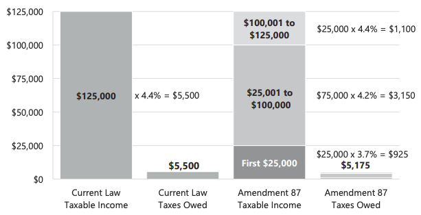
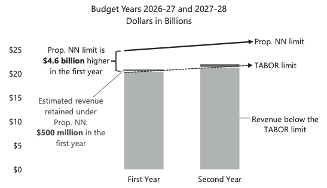
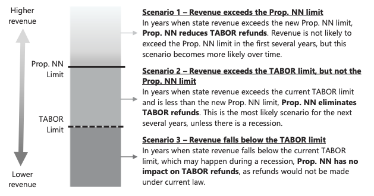
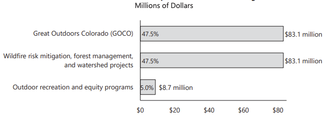

Colorado.gov Summaries
These summaries were taken directly from the 2026 State Ballot Information Booklet.
Amendment 81: Law Enforcement Communication with Federal Immigration Authorities
Ballot Title
Shall there be an amendment to the Colorado Constitution requiring law enforcement to notify the department of homeland security when a person is charged with either a violent crime or any crime if the person has a prior felony conviction if law enforcement cannot determine that the person is lawfully present in the United States?
Amendment 81 proposes amending the Colorado Constitution to:
- require state and local law enforcement to make a reasonable effort to determine whether an individual charged with a crime is lawfully present, if the charge is a crime of violence or the individual has a prior felony conviction; and
- notify federal immigration authorities within 72 hours of filing charges if law enforcement cannot determine that the charged individual is lawfully present in the United States.
See also: Claude analysis.
What Your Vote Means
A “yes” vote on Amendment 81 requires law enforcement to notify federal immigration authorities after filing certain criminal charges against individuals who are not confirmed to be lawfully present.
A “no” vote on Amendment 81 maintains current law, which allows cooperation with federal immigration authorities in some criminal matters, but limits state and local law enforcement involvement in civil immigration enforcement.
Summary and Analysis of Amendment 81
What does the measure do?
Amendment 81 requires certified peace officers employed by a law enforcement agency, correctional officers, and district attorney personnel to notify the federal Department of Homeland Security (DHS) within 72 hours of charging someone with a crime if the charge is a crime of violence or if the individual has a prior felony conviction. The notification requirement applies if the charged individual is not lawfully present in the United States, or if their lawful status cannot be determined.
Which individuals are subject to notification?
The measure applies to an individual charged with, but not yet convicted of, a crime of violence, which are crimes causing serious bodily harm or death to another person, or involving the use of a deadly weapon. This includes crimes such as murder, assault, arson, escape, extortion, kidnapping, aggravated robbery, and certain sexual offenses and human trafficking.
The measure also applies to individuals with any prior felony conviction, regardless of when it occurred, who are charged with any type of crime—including traffic violations, petty offenses, misdemeanors, and felonies.
In all cases, the measure applies once the individual is formally charged with a crime, not at the time of arrest, and before any legal process has determined whether they are guilty or innocent.
What is current law related to communication with federal immigration authorities?
Colorado law currently permits state and local law enforcement to cooperate in the enforcement of federal criminal law, but limits state and local participation in civil immigration enforcement. Among other restrictions, state and local government agencies and employees are prohibited from sharing certain nonpublic personal information with federal immigration authorities, unless directed by federal law, a court order, or a judicial warrant. Employees who violate these prohibitions may be subject to a fine of up to $50,000. However, neither federal nor state law require law enforcement agencies to notify federal immigration authorities when unlawfully present individuals are charged with crimes. State and local authorities do not currently track or publish data on how many unlawfully present individuals are charged with crimes of violence or are charged with any crime after a prior felony conviction.
What authority do local governments have to engage with federal immigration authorities?
Unless prohibited by state law, local governments have the authority to determine their level of cooperation and communication with federal immigration authorities. For example, the City and County of Denver expanded upon state law by prohibiting federal immigration authorities from accessing city-controlled property like courthouses. Conversely, El Paso County requires officers to notify federal immigration authorities if they suspect that an individual in their custody does not have legal status.
Arguments For Amendment 81
- Violent individuals and repeat offenders residing in the United States unlawfully should be reported to federal immigration authorities for further enforcement action, which could include removal from the country. The measure increases communication and coordination between Colorado law enforcement and federal immigration authorities to identify individuals who may pose a threat to public safety, without targeting those who are otherwise law-abiding and contribute positively to society.
- The measure creates a new uniform statewide standard for cooperation with federal immigration authorities. Consistent requirements across jurisdictions improve enforcement and reduce variation among local policies, thus improving public safety and allowing the criminal justice system to work efficiently and effectively in removing potential criminals from the country.
Arguments Against Amendment 81
- The measure undermines the constitutional right to due process and the presumption of innocence by requiring local law enforcement to report individuals to DHS and Immigration and Customs Enforcement (ICE) before a court determines whether the individual committed a crime. Criminal charges are allegations, not findings of guilt, and individuals should not face potentially life-altering immigration consequences, including deportation, before receiving a fair trial. People who are legally present or who are found to not have committed any crime could be swept up in immigration enforcement actions if they are unable to prove their status in the measure’s strict 72-hour timeframe.
- The measure is too broad to be enforced equitably and consistently, which erodes trust between law enforcement and their communities. By failing to define key terms such as “reasonable effort” or “lawful presence,” enforcement is left up to the discretion of individual officers, who may rely on subjective characteristics such as language spoken or personal appearance when deciding to review a person’s legal status. This breakdown in trust may deter some individuals from reporting crimes, cooperating with investigations, or seeking assistance for fear of subjecting themselves or members of their community to immigration enforcement.
Fiscal Impact of Amendment 81
State Spending
In state budget year 2026-27, state spending and workload will increase for agencies that employ law enforcement officers. Two departments require system updates: the Department of Revenue requires $50,000 to access federal databases and make programming changes, and the Department of Natural Resources requires $10,000 to update computer systems. The measure does not specify a funding source to pay for these costs and it is assumed that they will be paid from the General Fund. Workload may also increase in these departments, as well as the departments of Higher Education, Human Services, Judicial, Law, and Public Safety, to the extent they are required to determine a charged individual’s immigration status and communicate with the federal government on affected cases; however, this work will be primarily conducted by local governments.
Local Government Spending
Local law enforcement agencies, including police, district attorney offices, and Regional Transportation District officers, will have increased workload and potential spending. As with the state, the added workload involves determining a charged individual’s immigration status and communicating with the federal government on affected cases. Because this determination happens after charges are filed, most of the workload will fall on district attorney offices. The amount of work will vary by jurisdiction depending on how many individuals are charged there. Spending, if incurred, will be on systems updates.
Amendment 82: Constitutional Right to Purchase and Sell Natural Gas
Ballot Title
Shall there be an amendment to the Colorado Constitution creating new law granting the right for consumers to purchase natural gas for cooking or heating in homes or businesses and for distributors and utilities to sell natural gas to consumers?
Amendment 82 proposes amending the Colorado Constitution to:
- establish a constitutional right for consumers to purchase natural gas for cooking or heating; and
- establish a constitutional right for distributors and utilities to sell natural gas for use in homes and businesses.
See also: Claude analysis.
What Your Vote Means
A “yes” vote on Amendment 82 establishes a state constitutional right to purchase and sell natural gas for use in homes and businesses.
A “no” vote on Amendment 82 maintains current law and regulations related to the purchase and sale of natural gas.
Summary and Analysis of Amendment 82
What is natural gas and how is it currently used in homes and businesses?
Natural gas is a fossil fuel comprised primarily of methane. It can be used to power appliances such as furnaces, water heaters, clothes dryers, stoves, and ovens for both residential and commercial properties. Other common household energy sources in Colorado include electricity and propane, which can be used to power these same appliances.
Does Colorado currently regulate natural gas for use in homes and businesses?
The state regulates investor-owned natural gas utilities through the Public Utilities Commission (PUC), including rates, safety, and clean heat plans. In December 2025, the PUC issued a rule requiring these utilities to submit plans for a 41 percent reduction in greenhouse gas emissions by 2035, compared to 2015 levels, which align with emission targets in state law. The Colorado Department of Public Health and Environment regulates air pollution and sets emissions standards for natural gas appliances.
Local governments may also regulate the installation and repair of natural gas service, delivery, pipelines, and appliances. Several municipalities in Colorado have restricted the installation of natural gas appliances in new construction or certain renovation projects. For example, the Town of Crested Butte recently updated its building code, requiring that new residential buildings use electricity for heating, hot water heaters, and other appliances.
Will the measure change natural gas laws in Colorado?
This measure will establish the right to purchase and sell natural gas for homes and businesses in the state constitution. By doing so, it may limit the ability for state or local governments to enforce existing or future regulations related to natural gas.
Argument For Amendment 82
- Natural gas is an affordable and widely available energy source that reliably heats homes and businesses, including during periods of extreme cold. Natural gas appliances are proven technologies, and most households in Colorado rely on natural gas as their primary heating source. This measure will ensure continued access to natural gas without interference from state or local governments.
Argument Against Amendment 82
- Using natural gas contributes to climate change through emitting greenhouse gases, leads to air pollution, and should not be protected in the state constitution. Doing so limits efforts to reduce greenhouse gas emissions, improve air quality, and adopt more sustainable options, such as wind, solar, and geothermal energy. Local communities should have the ability to make decisions about public health priorities, energy needs, and climate goals.
Fiscal Impact of Amendment 82
State Spending
The measure may minimally increase expenditures for state agencies, primarily the Department of Local Affairs, to revise technical assistance to local governments concerning building codes that conflict with the right to purchase or sell natural gas. The measure may also increase workload and legal services for state agencies that regulate or monitor emissions from natural gas utilities or intervene in those cases, including the Public Utilities Commission, the Department of Natural Resources, the Department of Public Health and Environment, and the Colorado Energy Office.
Local Government Spending
Local governments that currently have or are considering building codes that regulate, prohibit or restrict natural gas in commercial and residential development may have increased legal services and costs to conform the codes with state law, and to modify permitting, inspection, and compliance activities.
Amendment 83: Constitutional Right to Hunt and Fish
Ballot Title
Shall there be an amendment to the Colorado Constitution creating a constitutional right to hunt, fish, and harvest fish and wildlife by traditional methods, including all species of fish and wildlife managed by the state except non-game species, endangered species, or any species that is illegal to hunt under federal law, and, in connection therewith, establishing hunting and fishing as the preferred means of managing fish and wildlife populations; and preserving the right of the state to regulate hunting, fishing, and wildlife management if necessary for sound scientific wildlife conservation and management, public safety, or to preserve the future of hunting and fishing opportunities for all species?
Amendment 83 proposes amending the Colorado Constitution to:
- establish a constitutional right to fish and hunt certain wildlife; and
- create a policy that states hunting and fishing are the preferred means of managing fish and wildlife populations in Colorado.
See also: Claude analysis.
What Your Vote Means
A “yes” vote on Amendment 83 establishes a state constitutional right to hunt and fish.
A “no” vote on Amendment 83 means that hunting and fishing will continue as allowed under existing state and federal law.
Summary and Analysis of Amendment 83
What does Amendment 83 do?
Amendment 83 establishes a right in the Colorado Constitution to fish and hunt certain wildlife, and establishes hunting and fishing as the preferred means of managing fish and wildlife populations.
The right applies to traditional hunting and fishing methods. It does not apply to species that are not typically hunted or fished (nongame species), endangered species, or any species that is illegal to hunt under federal law. This measure does not change existing laws related to trespassing on private property. It allows the state to regulate hunting, fishing, and wildlife management if necessary for sound scientific reasons, public safety, or to preserve future hunting and fishing opportunities.
How does Colorado currently manage and regulate fish and wildlife?
Colorado Parks and Wildlife (CPW) is the state agency responsible for fish and wildlife management in Colorado and administers regulations for hunting and fishing, as adopted by the CPW Commission, a citizen board appointed by the Governor. State law requires wildlife and their environment to be protected, preserved, enhanced, and managed for the use, benefit, and enjoyment of the people and visitors of Colorado.
Current regulations on hunting and fishing include:
- where and when hunting and fishing can occur;
- license and permit requirements;
- methods and materials for hunters and anglers; and
- limits on how many animals can be hunted, fished, or trapped.
Regulations are generally guided by information on wildlife and fish populations, species and habitat management plans, and recreational opportunities and needs.
How does this measure affect existing and future hunting and fishing regulations?
The measure results in no immediate change to existing state law or regulations. Hunting and fishing will continue to be allowed under existing state and federal law and regulations. Creating a new constitutional right to hunt and fish may affect how the legislature or CPW Commission makes policies about hunting and fishing, and it could lead to changes depending on how courts interpret the language of the measure when reviewing existing or future policies.
Argument For Amendment 83
- This measure provides lasting protection against future attempts to restrict or eliminate hunting and fishing, and Colorado should join the 24 other states that similarly protect the right to hunt and fish in their state constitutions. Additionally, hunting and fishing are part of Colorado’s heritage and cultural identity and are important to its tourism and recreation economy. Revenue from hunting and fishing licenses benefits habitat and wildlife management efforts in all areas of the state, with one-third of CPW’s current annual revenue, about $115 million, coming from license sales.
Argument Against Amendment 83
- The state constitution should protect fundamental rights and not recreational activities. Colorado is already a leader in wildlife conservation and management. Enshrining a right to hunt and fish in the Colorado Constitution is unnecessary, and it promotes one method of managing wildlife above others. This measure may restrict the ability to place guardrails on hunting, fishing, and trapping. Further, the use of undefined, vague language could prompt costly legal challenges and undermine reasonable regulations that voters, state lawmakers, and CPW have already put in place.
Fiscal Impact of Amendment 83
State Spending
The measure is not expected to significantly change state spending in the near term, but could result in increased legal costs for the state as the new right to hunt and fish is applied. Specifically, CPW may have increased workload and costs for legal advice when developing new rules and regulations to ensure that they comply with the measure. In addition, if legal challenges to the constitutionality of new or existing hunting and fishing regulations occur, CPW spending on litigation costs will increase. The exact amount of these potential costs cannot be estimated because they depend on the actions of private parties and decisions by the courts.
Amendment 84: Mail Ballot Voter Identification
Ballot Title
Shall there be an amendment to the Colorado Constitution requiring a voter to sign and include the last four digits of their social security number or their Colorado driver’s license or identification card number on the outside of their mail ballot for any federal or state election, and, in connection therewith, allowing the voter to correct missing or incorrect information, including with alternative forms of identification; and prohibiting a county clerk and recorder from counting the mail ballot unless the problem is fixed?
Amendment 84 proposes amending the Colorado Constitution to:
- require voters to provide identification information, in addition to their signature, for their mail ballots to be counted.
See also: Claude analysis.
What Your Vote Means
A “yes” vote on Amendment 84 requires voters to provide identification information with their mail ballot, in addition to their signature.
A “no” vote on Amendment 84 continues the current signature-only verification system for mail ballots.
Summary and Analysis of Amendment 84
What does this measure do?
For federal and statewide elections, the measure requires voters to include the last four digits of a government-issued identification number when submitting their mail ballot. Acceptable forms of identification are a social security number, a Colorado driver’s license number, or a Colorado identification card number. Any form of Colorado identification provided must be compliant with the federal Real ID law. This new verification process created by the measure is in addition to the current signature verification process for mail ballots.
If a voter’s identification information is missing or cannot be matched to the state voter registration database, the county election office must contact the voter to tell them how to correct the discrepancy. Consistent with the existing signature verification process, the ballot will not be counted unless the voter takes steps within eight days of election day to confirm their identify. Specifically, a voter may submit a copy of one of the forms of identification allowed under the measure. Alternately, a voter may provide a copy of a U.S. passport, a U.S. military identification card, or a tribal photo identification card. During this process, identification may be provided in-person or digitally. Voters with qualifying physical disabilities or elderly voters who are entitled under federal law to vote by mail may submit a broader range of acceptable forms of identification.
What is the role of mail ballots in Colorado elections?
Every Colorado voter receives a mail ballot for federal and statewide elections. Coloradans can vote by returning their mail ballot at a drop box or through the mail, or they may vote in person at any voter service and polling center in their county. In 2024, 92 percent of all ballots cast in Colorado were mail ballots, most of which were returned to a drop box.
How are mail ballots verified under current law?
Colorado currently uses signature verification to determine that mail ballots come from eligible voters. When a voter returns a mail ballot, they must sign the envelope. Once the ballot is received by the county election office, the signature on the envelope is then compared to the voter’s signature on file from election and driver’s license records. If a signature discrepancy is found, the signature is then reviewed by two election judges of different political parties. If they both agree that the signature likely does not belong to the voter, the county election office must contact the voter to have them confirm their identity and that they submitted the ballot. If the voter does not confirm their identity within eight days after election day, the ballot is not counted.
Does the measure affect the allowable forms of identification for in‑person voting?
No. The measure does not change the forms of identification that may be presented when voting in person at a voter service and polling center. The allowable forms of identification for in-person voting are broader than those required for mail ballots under this measure, including documents that show a person’s name and address.
Argument For Amendment 84
- Additional voter verification for mail ballots strengthens election security while preserving convenient access to voting. Government-issued identification documents are more consistent and less subjective than the current signature verification process. Most voters already have an eligible identification card, or know their social security number. If a voter does not have one of the required forms of identification to complete their mail ballot, they can choose to vote in person using several identification options. Adding a convenient form of additional verification for mail ballots promotes public confidence that ineligible ballots will not be counted.
Argument Against Amendment 84
- The measure adds an unnecessary burden to voting, without meaningfully improving election security. The measure could result in eligible voters’ ballots not being counted due to minor mistakes when submitting their mail ballot. Further, voters who have privacy concerns about providing sensitive information when submitting their ballot or who are unable to produce the required identification will be discouraged from using mail ballots, which is Colorado’s most commonly used and convenient method of voting. The current signature verification process is effective, secure, and convenient for voters and it successfully identifies the rare cases when ineligible individuals attempt to submit a mail ballot.
Fiscal Impact of Amendment 84
The measure will increase state and local spending by up to $2.7 million in the initial budget year 2026-27, and $1.2 million annually in future years for voter outreach, printing, and election staff to verify voter information. These costs will be divided between state and local governments as discussed below.
Local Government Spending
The new verification process under the measure will increase county spending by up to $2.5 million in the 2026-27 budget year and up to $1.2 million in future years. About 45 percent of these county costs will be reimbursed by the state government. These costs are driven from several new requirements under the measure. First, election judges must review identification numbers provided by voters, which will increase staffing hours and overtime during elections. Second, county election offices must notify voters of any discrepancies involving their identification information, which will require sending a postcard or digital notification to voters and segregating ballots until valid identification is provided. Lastly, county election offices will also be required to update ballot materials and envelopes, modify various elections systems, and conduct voter outreach.
State Spending
The Department of State will have increased costs to inform voters of the changes to mail voting across the state and to reimburse counties. Specifically, the department will need to conduct an outreach and communication campaign at a cost of $100,000 in state budget year 2026-27 and $200,000 in state budget year 2027-28. The department will also have ongoing workload and costs for outreach and printed materials estimated at $20,000 for each presidential primary, statewide primary, and general election. As discussed above, the state will also have costs to reimburse counties for a portion of their costs under the measure. This reimbursement is estimated to be up to $1.1 million in during the 2026-27 budget year, and up to $500,000 for in future years. Historically, these costs have been paid using fees and other revenue collected by the department, rather than from the state General Fund.
State Revenue
To cover the costs in the Department of State discussed above, business filing fees may need to be raised to cover all or some of the costs of this measure. The fees affected, the timing of any increase, and the actual amount of fee charges will be set administratively by the department based on its available fund balance and total program costs.
Amendment 85: Plain Language Ballot Titles
Ballot Title
Shall there be an amendment to the Colorado Constitution concerning ballot question language, and, in connection therewith, requiring all state and local ballot questions to be written in plain language and at no more than an 8th grade reading level and prohibiting a state statute from requiring language that conflicts with these requirements in ballot questions for citizen-initiated measures?
Amendment 85 proposes amending the Colorado Constitution to:
- require that ballot titles be in plain language, written at no more than an eighth-grade reading level; and
- prohibit laws that require specific language in initiative ballot titles, if the laws interfere with plain language in the ballot title.
See also: Claude analysis.
What Your Vote Means
A “yes” vote on Amendment 85 requires that ballot titles be written in plain language, defined as an eighth-grade reading level, and prohibits any law from interfering with this requirement.
A “no” vote on Amendment 85 maintains current law, which requires plain language for ballot titles, but does not specify a particular grade-level reading standard.
Summary and Analysis of Amendment 85
How do measures appear on the ballot and how are ballot titles written?
A person may propose a new law or change to existing laws through the initiative process. Through this process, the change may be placed on the ballot if the person collects enough signatures from registered voters.
Before collecting signatures, every initiative receives a ballot title written by the state Title Board. The board is made up of representatives from the Attorney General’s office, the Secretary of State’s office, and the legislature’s legal office. The ballot title is a brief statement intended to fairly and accurately represent the intent and meaning of an initiative.
State law requires that the Title Board write ballot titles that are brief and help voters understand the effect of a “yes” or “no” vote on the measure. The board must write titles in plain language, that are understandable by the widest possible audience, and that avoid legal, technical, or specialized terminology, when possible.
The state legislature may also refer measures to the ballot. When the legislature refers a measure, the legislature writes the ballot title. State law requires that bills and bill titles be written in plain, nontechnical language, use words with common meaning, and be understandable to the average reader.
What does Amendment 85 do?
Amendment 85 requires that all ballot titles be in plain language, written at no more than an eighth-grade reading level. The measure does not define plain language or designate who will determine if ballot titles meet the standard. An eighth-grade reading level is described as one that is easily and fully understood by a majority of people. This typically includes short sentences, familiar words, and a conversational tone.
Amendment 85 also prohibits laws requiring citizen initiatives to include language in the ballot title that may interfere with the plain language requirement. The ballot titles for measures referred by the state legislature are not subject to this prohibition. There are several current laws that require additional language in ballot titles. For example, if a citizen initiative raises or lowers state taxes, the initiative’s title must include specific language describing the changes and the impact on taxpayers. For citizen initiatives that reduce tax collections, the title must include an estimate of potential state spending reductions and how reduced revenue might impact the three largest areas of government spending.
Arguments For Amendment 85
- While ballot titles are supposed to be written as plainly as possible, this measure provides additional guidance as to what that means by requiring an eighth-grade reading level as the standard. Providing a constitutional standard will help in crafting simple titles that voters may better understand when considering their vote, and may help them to navigate complicated and technical information when trying to understand a measure’s impact.
- The measure creates a constitutional protection against the state legislature interfering with plain language in initiative ballot titles. Citizen initiatives are a way for the public to pass laws without restrictions created by the legislature. This measure ensures that no future legislature may add laws or change existing laws to create complicated or confusing initiative ballot titles.
Arguments Against Amendment 85
- This measure is unnecessary as state law already provides ample guidance for the preparation of ballot titles in plain language. Ballot titles must convey important information to voters about complex policies. This measure creates a constitutional standard with no guidance about how its requirements are different from current law. This could lead to more challenges of initiative ballot titles, impacting the initiative process.
- This measure puts vague and undefined language in the constitution, which could prevent the creation of laws to help voters better understand the effects of ballot measures. Laws that add language to ballot titles could be prohibited, even if that language provides critical information for voters. The measure may lead to challenges of existing laws that help voters understand how their vote affects state and local programs and funding.
Fiscal Impact of Amendment 85
State Spending
The Title Board includes representatives from the Department of State, the Attorney General’s Office, and the General Assembly. The measure may minimally increase workload for the Title Board to update its standards for plain language and what constitutes an eighth-grade reading level and to apply these standards when setting titles for citizen-initiated ballot measures.
Amendment 86: Requirements for Off‑Cycle Congressional Redistricting
Ballot Title
Shall there be an amendment to the Colorado Constitution concerning congressional redistricting, and, in connection therewith, reenacting the current process for congressional redistricting in the Colorado Constitution and prohibiting modifications to a final map unless at least three public meetings are held, the modifications do not have the effect of dividing communities of interest or purposefully favoring one political party, and are approved by the congressional redistricting commission and the Colorado Supreme Court?
Amendment 86 proposes amending the Colorado Constitution to:
- require the Colorado Independent Congressional Redistricting Commission and the Colorado Supreme Court to review and approve any proposed changes to congressional districts outside of a scheduled redistricting year; and
- prohibit off-cycle changes to congressional districts that intentionally favor any political party or unnecessarily divide communities.
See also: Claude analysis.
What Your Vote Means
A “yes” vote on Amendment 86 requires the Colorado Independent Congressional Redistricting Commission to approve any new congressional districts proposed outside of a scheduled redistricting year.
A “no” vote on Amendment 86 continues the current requirements for changing congressional districts every ten years.
Summary and Analysis of Amendment 86
What is congressional redistricting?
Colorado currently has eight congressional districts, which are regions of the state divided to be equal in population and meet other criteria. One person is elected from each of the eight districts to represent Colorado in the U.S. House of Representatives. Congressional redistricting is the process of dividing the state into congressional districts. It usually occurs after a census, which is when all the people in the United States are counted every ten years. Using the state’s population of 5.8 million as of the 2020 census, the current required congressional district population size is 721,714 people.
How is redistricting done in Colorado?
In 2018, Colorado voters amended the Colorado Constitution to create the Colorado Independent Congressional Redistricting Commission (commission). Every ten years, a new commission is formed and is charged with using the population figures from the U.S. Census Bureau, specific legal criteria, and public input from around the state to draw Colorado’s congressional districts. The last commission was formed and completed its work in 2021, and the next commission will meet and create new districts in 2031.
What is off‑cycle redistricting?
Off-cycle redistricting means changing the boundaries of congressional districts between the regular redistricting periods. The current redistricting process, protected in the Colorado Constitution, is designed for redrawing congressional and legislative districts immediately following the census and does not establish a process specifically for off-cycle redistricting. Since 2025, at least ten states have changed their congressional district maps through off-cycle redistricting.
What does Amendment 86 do?
Amendment 86 requires that any off-cycle redistricting, if it were to occur, be approved by the commission and adopted by the Colorado Supreme Court. Before approving any changes, the commission must hold at least three public hearings. The measure also prohibits off-cycle changes to congressional districts that intentionally favor a political party or unnecessarily divide communities of interest. Any such redistricting efforts would require the use of population figures from the most recent census or another data source.
Argument For Amendment 86
- Amendment 86 protects public participation in any off-cycle changes to congressional districts and ensures that changes are reviewed through a fair and transparent process. Requiring the commission to review districts, and not allowing districts to favor a single political party, keeps partisan politics out of the process. This affirms the voters’ intent in creating an independent commission, which was overwhelmingly approved in a 2018 statewide election. Across the nation, politicians have attempted to change districts in their favor with limited public input. Amendment 86 safeguards the redistricting process in Colorado.
Argument Against Amendment 86
- If Colorado voters ever want to enact new congressional districts in an off-cycle redistricting year, this measure stands in their way. Whether new districts are in response to partisan redistricting in other states, changes in political priorities, or other concerns with Colorado’s congressional districts, this measure creates an unnecessary constitutional barrier. Further, if voters feel that the districts created by the commission during the regularly scheduled redistricting no longer meet the needs of the state, that same commission should not play a role in the process. Voters should always have the final word on whether Colorado’s congressional districts still reflect the state’s needs.
Fiscal Impact of Amendment 86
State Spending
The measure increases costs in the Legislative Department by about $370,000 in any year that the commission must convene and review changes to congressional maps outside of its usual redistricting schedule. The costs are to staff the commission, provide reimbursement for commissioners, and hire legal counsel. The Judicial Department will also have a small workload increase to review any new maps.
Amendment 87: Graduated Income Tax
Ballot Title
Shall state taxes be increased $2.7 billion annually, in order to increase or improve levels of public services, including K-12 public school education, health care, and early child care and education services, by an amendment to the Colorado constitution and a change to the Colorado revised statutes repealing existing law and creating new law to replace the uniform state income tax rate with a graduated income tax structure, and, in connection therewith, amending the taxpayer’s bill of rights to eliminate the constitutional requirement for all taxable net income to be taxed at one rate with no added tax on income; establishing various income tax rates based on the amount of taxable income earned by individuals, estates, trusts, and corporations, while maintaining the current 4.4% tax on income from the sale of a principal residence, which will result in the estimated change in income taxes owed by individuals as identified in the following table; and authorizing the state to retain and spend any increased revenue from the new tax structure, as a voter-approved revenue change, to supplement current levels of funding for K-12 public school education, health care, and early child care and education programs?
Amendment 87 proposes amending the Colorado Constitution and Colorado statutes to:
- remove the constitutional requirement that the state income tax be set at a single flat rate;
- replace the current flat income tax with a graduated state income tax that sets lower rates for lower incomes and higher rates for higher incomes;
- spend the additional revenue collected from these income tax rate changes on K-12 education, health care, and early childhood care and education; and
- exempt additional revenue collected under the measure from the state’s constitutional revenue limit.
See also: Claude analysis.
What Your Vote Means
A “yes” vote on Amendment 87 creates a graduated state income tax that increases revenue; uses the additional money for K-12 education, health care, and early childhood care and education; and exempts additional revenue collected from the state’s constitutional revenue limit.
A “no” vote on Amendment 87 keeps the current constitutional requirement for a flat state income tax rate.
Summary and Analysis of Amendment 87
What does Amendment 87 do?
The measure replaces the state’s current flat income tax rate for individuals and businesses with a graduated income tax that lowers taxes for taxable income below $500,000 and raises taxes for taxable income above $500,000. It requires that the additional money collected from this change be spent on K-12 education, health care, and early childhood care and education, and exempts this money from the state’s constitutional revenue limit, also known as the Taxpayer’s Bill of Rights (TABOR) limit. The state must produce an audited annual report on how much additional revenue was collected and how it was spent.
What is the state’s current income tax structure?
Since 1987, Colorado has had a flat income tax rate, in which all taxpayers, including individuals and businesses, pay the same income tax rate on their income. The state’s current flat income tax rate is 4.4 percent. The majority of state income tax revenue is used for general state programs and services. The TABOR amendment in the state constitution requires that income be taxed at a flat rate.
Income tax is paid on a portion of a household’s or business’s income, which is called taxable income. For example, a married couple earning $42,000 in income per year may have about $10,000 in taxable income and owe $440 in taxes annually. A married couple earning $130,000 in income per year may have about $100,000 in taxable income and owe $4,400 in taxes annually.
What is the graduated income tax structure proposed in Amendment 87?
Amendment 87 removes the constitutional requirement that income be taxed at a flat rate and creates a graduated income tax starting in 2027. In this graduated tax system, an individual’s or business’s income is split into six ranges—called brackets—with the lowest income tax bracket taxed at the lowest rate and each higher bracket taxed at increasing rates, as shown in Table 1.
This is similar to how the federal income tax works. Unlike the federal income tax, the new state income tax brackets are not adjusted for inflation, so more of taxpayers’ incomes will fall into the higher brackets over time. Each tax rate is only applied to the portion of taxable income that falls into that bracket.
Table 1: Graduated Income Tax Rates by Income Bracket Under Amendment 87
| Taxable Income Bracket | Current Tax Rate | Amendment 87 Tax Rate | Difference |
|---|---|---|---|
| $25,000 or less | 4.4% | 3.7% | -0.7 |
| $25,001 to $100,000 | 4.4% | 4.2% | -0.2 |
| $100,001 to $500,000 | 4.4% | 4.4% | 0.0 |
| $500,001 to $750,000 | 4.4% | 7.4% | +3.0 |
| $750,001 to $1,000,000 | 4.4% | 7.9% | +3.5 |
| More than $1,000,000 | 4.4% | 8.4% | +4.0 |
For example, as shown in Figure 1 below, an individual or business earning $125,000 a year in taxable income is taxed at a rate of 3.7 percent for the first $25,000. The next portion of taxable income between $25,000 and $100,000 is taxed at a rate of 4.2 percent. The remaining $25,000 is taxed at the rate of 4.4 percent. The total tax owed under the measure would be $5,175, or $325 less than the $5,500 they would owe under current law.
Figure 1: Tax Rates and Taxes Owed for a Taxpayer with $125,000 in Taxable Income

How does Amendment 87 change the amount of taxes owed?
For individuals and businesses with taxable incomes of less than $500,000, the measure decreases the amount of income taxes owed, up to a maximum reduction of $325 per taxpayer. For taxpayers with incomes of about $500,000 and above, the measure increases the amount of income taxes owed.
Table 2 shows an example of taxes owed under the measure and under current law for seven hypothetical taxpayers with different levels of taxable income.
Table 2: Taxes Owed Under Current Law and Amendment 87
| Example Taxable Income | Current Income Tax Owed | Amendment 87 Income Tax Owed | Difference in Income Tax Owed |
|---|---|---|---|
| $25,000 | $1,100 | $925 | -$175 |
| $62,500 | $2,750 | $2,500 | -$250 |
| $125,000 | $5,500 | $5,175 | -$325 |
| $300,000 | $13,200 | $12,875 | -$325 |
| $550,000 | $24,200 | $25,375 | +$1,175 |
| $625,000 | $27,500 | $30,925 | +$3,425 |
| $875,000 | $38,500 | $50,050 | +$11,550 |
| $2,000,000 | $88,000 | $143,925 | +$55,925 |
How does Amendment 87 change state revenue?
By changing tax rates for individuals and businesses, Amendment 87 is expected to increase state income tax revenue by an estimated $2 billion in the first full year and more in later years. However, actual revenue collections may be more or less than this estimate depending on economic conditions and other factors.
The change in state revenue under the measure is calculated as the difference between the actual income tax revenue collected under the measure’s graduated income tax rates and the income tax revenue that would have been collected under the state’s current rate of 4.4 percent. See the Fiscal Impact section below for additional detail.
Does Amendment 87 impact TABOR refunds?
The measure has no impact on current TABOR refunds or TABOR refund mechanisms. Under current law, the state is expected to collect $15 billion in income tax revenue in 2028. Under this measure, it is expected to collect $2 billion more in income tax revenue, for a total of $17 billion. The additional $2 billion is exempt from the TABOR limit. The TABOR limit and the amount of revenue subject to the limit remain the same, and estimated TABOR refunds will not change. For additional information, see the LCS memorandum titled, “A Brief Overview of the TABOR Revenue Limit.”1
How will the additional revenue be spent?
The increased revenue collected under Amendment 87 must be spent on K-12 education, health care, and early childhood care and education. It must add to, and not replace, spending on those services. The state legislature will decide what specific programs will receive additional funding and how much.
What happens if Amendment 87 and Proposition 136 both pass?
Proposition 136 limits the state income tax rate at the current law rate of 4.4 percent. If both Amendment 87 and Proposition 136 are approved by voters, the proposed tax rates for income over $500,000 in Amendment 87 would be higher than the 4.4 percent limit in Proposition 136.
Generally, when parts of voter-approved measures conflict, the policy outcome is determined by the measure that received more votes. However, if both measures are approved by voters, the exact outcome is unclear. The state legislature or a court will need to determine how to resolve any conflicts.
Arguments For Amendment 87
- Amendment 87 cuts taxes for 97 percent of taxpayers, including most households and small businesses, while increasing taxes only for top earners who have the ability to pay. A graduated income tax is more equitable than a flat tax because it recognizes a fundamental economic reality: each dollar taxed on someone earning $30,000 imposes a far greater hardship than each dollar taxed on someone earning $1 million. By aligning tax rates with taxpayers’ financial means, a graduated tax distributes the burden more justly across all income levels, lowers taxes for most households and small businesses, and puts more money in the hands of working families who will spend it in their local communities.
- The measure funds critical services at a time when additional funding is desperately needed. Crucial programs are at risk of further cuts because of changes in federal policy. Revenue from the graduated tax will fund education, health care, and child care, public services that many Colorado households rely on. Colorado public schools are significantly underfunded, and constraints on the state budget make Medicaid cuts increasingly likely. Additional funding will provide more security for the people who depend on these services.
- The graduated income tax is not an experiment, but a proven approach for funding essential public services. The federal government and 27 other states already have a graduated income tax. This tax structure lessens rising wealth inequality and increases funding for state programs. Sales and property taxes place greater burdens on lower-income households, and a graduated income tax corrects for this inequity while also funding services for all Coloradans.
Arguments Against Amendment 87
- The measure is a multibillion-dollar tax increase, and hiking taxes on higher incomes will harm Colorado’s economy. Higher tax rates make Colorado a less competitive place to start and grow a business, and may encourage some high earners to leave the state entirely. When businesses and high-earning individuals relocate, people at all income levels may lose their jobs. Further, because the brackets do not increase with inflation, more and more taxpayers will pay these higher taxes each year. Colorado cannot risk employers and jobs fleeing the state because our taxes are too high. Keeping taxes competitive for everyone fuels economic activity and builds a stronger, more prosperous Colorado for all.
- The measure is an attack on the fair and predictable tax system that TABOR currently guarantees. The state’s current flat tax is fair because everyone has equal access to state services, high-income earners already pay more taxes, and low-income earners qualify for more tax deductions and credits. The state should better prioritize the tens of billions of dollars it already collects, rather than switch to a new, complicated tax system.
- The measure will permanently expand the size of government, increase careless and wasteful spending of taxpayer dollars, and hinder economic growth. Instead of spending billions of dollars more on broadly defined government services, state policy should focus on lowering taxes for everyone or funding specific programs that are proven to help Colorado’s residents.
Fiscal Impact of Amendment 87
Taxpayer Impacts
Amendment 87 will decrease the amount of income tax owed by taxpayers with Colorado taxable income of less than $510,834 and increase the amount of income tax owed by taxpayers with Colorado taxable income of $510,834 and above. State law requires Legislative Council Staff to estimate the potential tax burden on affected taxpayers within specified federal adjusted gross income categories. Federal adjusted gross income is total income from all sources, with certain adjustments, as determined when filing federal income taxes. Colorado taxable income, calculated when filing state income taxes, is based on federal adjusted gross income with additional adjustments required or allowed under state law. Table 3 shows the expected change in tax burden by federal adjusted gross income category. The measure has no impact on current TABOR refunds or TABOR refund mechanisms.
Table 3: Estimated Impact on Taxpayers by Income
| Income Category | Estimated Number of Taxpayers | Total Change in Tax Burden | Average Change in Tax Burden |
|---|---|---|---|
| $14,999 or less | 579,309 | -$638,951 | -$1 |
| $15,000 to $29,999 | 408,924 | -$16,093,434 | -$39 |
| $30,000 to $39,999 | 272,616 | -$29,611,480 | -$109 |
| $40,000 to $49,999 | 238,539 | -$38,651,945 | -$162 |
| $50,000 to $69,999 | 443,000 | -$85,925,358 | -$194 |
| $70,000 to $99,999 | 408,912 | -$93,232,609 | -$228 |
| $100,000 to $149,999 | 408,912 | -$115,554,178 | -$283 |
| $150,000 to $199,999 | 238,532 | -$77,522,900 | -$325 |
| $200,000 to $249,000 | 102,228 | -$33,224,100 | -$325 |
| $250,000 to $499,999 | 204,456 | -$66,448,200 | -$325 |
| $500,000 to $999,999 | 55,900 | -$15,893,609 | -$284 |
| $1,000,000 or more | 46,328 | $1,208,468,497 | +$26,085 |
Note: Income is federal adjusted gross income, not Colorado taxable income; therefore, the income ranges and tax rates do not align with those in Table 2. The estimated number of taxpayers column counts joint filers as one taxpayer. Estimates are based on Colorado Department of Revenue data for all residents for tax year 2023 and Legislative Council Staff estimates.
State Revenue
By replacing the state flat income tax with a graduated income tax, the measure increases revenue from income taxes by an estimated $958.4 million in budget year 2026-27, $1.972 billion in budget year 2027-28, and increasing amounts in future years based on income and population growth. The estimate for budget year 2026-27 represents a half-year impact for tax year 2027. The additional revenue will be credited to the Colorado Future’s Account created in the measure. The increased revenue is exempt from TABOR as a voter-approved revenue change. The state budget year begins each July 1 and ends on June 30.
State law requires Legislative Council Staff to include an estimate of the maximum dollar amount of the change in state government revenue for the first full fiscal year of a proposed tax increase. This is the number that appears in the ballot question. The estimates in the previous paragraph represent the revenue impact of the measure under the current Legislative Council Staff revenue forecast. Based on forecast error that could occur, the maximum dollar amount of the change in state government revenue and fiscal year spending for budget year 2027-28 is estimated as an increase of $2.7 billion.
State Spending
The measure increases the amount of state revenue available to spend for the purposes identified in the measure, including K-12 education, health care, and early childhood care and education, in FY 2026-27 and future fiscal years. To administer the tax rate change, the measure is expected to increase one-time spending in the Department of Revenue by $98,000.
School District Revenue and Spending
The measure increases available state funding to school districts. The exact amount distributed to school districts will depend on decisions made by the General Assembly when allocating money from the Colorado Future’s Account.
State Spending and Tax Increases
Article X, Section 20, of the Colorado Constitution requires that the following fiscal information be provided when a tax increase question is on the ballot:
- estimates or actual amounts of state fiscal year spending for the current year and each of the past four years with the overall percentage and dollar change; and
- for the first full year of the proposed tax increase, estimates of the maximum dollar amount of the tax increase and of fiscal year spending without the increase.
“Fiscal year spending” is a legal term in the Colorado Constitution. It equals the amount of revenue subject to the constitutional spending limit that the state or a district is permitted to keep and either spend or save for a single year. Table 4 shows state fiscal year spending for the current year and each of the past four years.
Table 4: State Fiscal Year Spending
| Fiscal Year | Actual FY 2022‑23 | Actual FY 2023‑24 | Actual FY 2024‑25 | Actual FY 2025‑26 | Estimated FY 2026‑27 |
|---|---|---|---|---|---|
| Fiscal Year Spending | $16.66 billion | $18.07 billion | $19.15 billion | $19.84 billion | $20.50 billion |
Four-Year Dollar Change in State Spending: $3.85 billion
Four-Year Percent Change in State Spending: 23.1 percent
Table 5 shows the maximum revenue expected from the income tax increase in Amendment 87 for FY 2027-28, the first full fiscal year for which the tax increase would be in place, and an estimate of state fiscal year spending without the tax increase.
Table 5: Estimated State Fiscal Year Spending and the Proposed Tax Revenue Increase
| FY 2027‑28 Estimate | |
|---|---|
| Fiscal Year Spending Without the Tax Increase | $24.62 billion |
| Revenue Increase from Increased Income Taxes | $2.7 billion |
Proposition NN: Keep and Spend Money for Education and Other Purposes
Ballot Title
Shall state investment in K-12 public education increase two percent each year for the next ten years, with investments used to increase teacher pay, improve teacher retention, lower class sizes, and increase access to career and technical courses, without raising taxes but instead funded by raising the annual limit on state fiscal year spending only by the amount spent on public K-12 education as a voter-approved revenue change, and requiring an annual publicly released, independent audit to show how the new investments are spent?
Proposition NN proposes amending the Colorado statutes to
- allow the state to keep some or all of the revenue that the state’s constitutional revenue limit, also known as the Taxpayer’s Bill of Rights (TABOR), would otherwise require to be refunded to taxpayers, up to the amount the state spends on public education; and
- spend the retained revenue to increase funding for K-12 education and programs that support children, and, after ten years, K-12 education and any other purposes to be determined by the state legislature.
See also: Claude analysis.
What Your Vote Means
A “yes” vote on Proposition NN allows the state to keep some or all of the revenue that otherwise would be refunded to taxpayers under TABOR. The retained revenue must be spent on K-12 education, programs that support children, and any other purposes.
A “no” vote on Proposition NN maintains current TABOR refunds and funding levels for K-12 education, programs that support children, and other state purposes.
Summary and Analysis of Proposition NN
What does Proposition NN do?
Proposition NN allows the state to keep and spend revenue that would otherwise be refunded to taxpayers under TABOR, up to a newly established limit. The new limit is higher than the current limit and is based on the amount the state government spends on public education.
In the first ten years, this revenue must be spent on K-12 education and programs that support children. After ten years, the retained revenue must be spent on K-12 education and other purposes to be determined by the state legislature. The measure dedicates the K-12 education spending to teacher pay and retention, smaller class sizes, career and technical courses, school services, disability services, and more instructional hours, as described below. The retained revenue also must be spent to reimburse local governments for property tax exemptions, as required under current law.
The measure includes requirements for the state auditor and school districts to report on how the retained money is spent.
What is the TABOR limit and what are TABOR refunds?
The Colorado Constitution limits the amount of revenue the state government can collect each year. The limit is equal to the prior year’s limit, adjusted for inflation plus population growth. This is known as the TABOR limit. Voters may give the state permission to keep and spend additional revenue above the TABOR limit.
If the amount of revenue the state collects in any year is above the TABOR limit, the excess amount must be refunded to taxpayers. These are called TABOR refunds, and they are distributed to taxpayers in several ways. For more information, see the Legislative Council Staff memorandum titled, “A Brief Overview of the TABOR Revenue Limit.” https://leg.colorado.gov/bluebook
TABOR refunds are often distributed when people file their taxes, but they are different from tax refunds that are owed when people overpay their taxes. Tax refunds are not affected by this measure.
How much revenue will the state keep and spend under Proposition NN?
Under Proposition NN, the maximum amount the state may keep is equal to the current TABOR limit, plus the highest amount the state has spent on K-12 education from certain funding sources in previous years. This is referred to as the Proposition NN limit in this analysis.
The actual amount the state will keep depends on how much revenue it collects. For example, in the first year, the measure allows the state to keep up to $4.6 billion above the current TABOR limit. However, the state is estimated to actually keep about $500 million, which is the amount of revenue the state is expected to collect above the TABOR limit. This is shown in Figure 1 below.
Figure 1: State Revenue Limits Under Proposition NN

The Proposition NN limit continues indefinitely. Any revenue above the new Proposition NN limit must be refunded to taxpayers.
In later years, the Proposition NN limit is expected to grow faster than the current TABOR limit based on the amount the state legislature allocates for K-12 education. State revenue is expected to continue to be well below the Proposition NN limit in the next several years, and is not expected to exceed the Proposition NN limit for at least the next five to ten years. Long-term projections beyond that period are uncertain.
How does Proposition NN impact TABOR refunds?
Proposition NN’s impact on TABOR refunds depends on how much money the state collects above the current TABOR limit in a given year, and how much the state spent on public education in prior years. Figure 2 shows the range of possible TABOR refund impacts, which will vary from year to year.
Under current estimates, revenue in the next several years is expected to exceed the current TABOR limit but not the new Proposition NN limit, which would eliminate TABOR refunds in these years, as described in Scenario 2 in the figure below.
Figure 2: Scenarios for TABOR Refund Changes

How will the retained revenue be spent?
Proposition NN specifies how revenue retained above the current TABOR limit must be spent. The revenue must first be used to reimburse local governments for the lost tax revenue from property tax exemptions for seniors, veterans with a disability, and Gold Star surviving spouses, as is already required as a TABOR refund mechanism under current law. All remaining revenue is deposited into the newly created Children’s Account. Figure 3 shows new spending requirements under Proposition NN.
Figure 3: New Spending Requirements Under Proposition NN

How will the K‑12 funding be used?
Money in the Children’s Account must first be used for increased teacher pay and retention, access to career and technical courses, and smaller class sizes. This money will be distributed to school districts and charter schools that then decide how to spend this money within allowable uses. They must post downloadable, sortable information online about how they spent the money.
The amount required to be spent for these purposes will grow each year for ten years, and then remain flat in later years. The amount is expected to be about $110 million in the first year, $220 million in the second year, and may grow to between $1 billion and $2 billion per year by the end of ten years. These amounts are only paid if enough revenue is retained.
For the first ten years, if the amount spent on teacher pay and retention, career and technical courses, and smaller class sizes is less than half the amount in the account, then the measure requires additional spending on disability services, school services, and increasing instructional hours, such that at least half the amount in the account is spent on K-12 education overall. Funding for disability services, school services, and increasing instructional hours is estimated at about $130 million in the first year and $20 million in the second year. The state legislature will determine how to allocate these funds to schools and districts.
How will the money for children’s programs be used?
In the first ten years, any money remaining in the account after K-12 spending must be spent on programs that support children, prioritizing full-day preschool, child care, and other programs that help children be successful in school. The state legislature will determine how to spend this money, which is estimated to be about $240 million in the first year and $230 million in the second year.
How will funding allocations change after the first ten years?
After ten years, the measure requires that a flat amount be dedicated to K-12 education each year for increased teacher pay and retention, access to career and technical education, and smaller class sizes. Any remaining money in the Children’s Account may be spent on any purpose as determined by the state legislature.
How does Proposition NN interact with other measures?
Proposition 137 reduces the amount of revenue the state collects that is subject to the TABOR limit. This measure will not affect the Proposition NN limit. However, if the measure passes, the amount of money the state will actually keep and spend under Proposition NN may be reduced or eliminated.
Arguments For Proposition NN
- Proposition NN raises teacher pay, reduces class sizes, and improves career and technical education, benefitting every school district in the state. A state study found that Colorado’s schools face a funding shortfall of $3.5 billion, or about $4,000 per pupil. Proposition NN redirects money the state already collects to Colorado’s kids and classrooms, keeping experienced teachers in the classroom and expanding course options and support. The measure pairs the investment schools need with the accountability taxpayers deserve.
- Proposition NN frees up funds that should already be supporting Colorado’s children. The price of educating and caring for a child grows year after year, and the current revenue limit does not keep pace. As a result, the state is falling behind on the services that families depend on most. Permanent relief from this limit is long overdue. Proposition NN uses existing revenue to address the real and rising costs of child care, universal preschool, and other early childhood needs.
Arguments Against Proposition NN
- Proposition NN is essentially a tax increase, permanently eliminating or reducing TABOR refunds. TABOR refunds are a taxpayer right. Eliminating or sharply reducing those refunds means that government will keep more of the money that families earn. For households already stretched thin, losing TABOR refunds is a significant financial hit. TABOR was enshrined in the state constitution to protect taxpayers against unchecked government growth.
- Proposition NN eventually hands the state over $5 billion per year at the expense of Colorado families. Funding for Colorado schools has increased 25 percent over the last five years, while enrollment continues to decline. Before reaching deeper into taxpayers’ pockets, the government should demonstrate it has exhausted every avenue to reduce wasteful spending, eliminate redundant programs, and deliver existing services more efficiently.
Fiscal Impact of Proposition NN
Taxpayer Impacts
Proposition NN is expected to reduce the amount refunded to taxpayers by $329.9 million in the current 2026-27 budget year, $521.0 million in the 2027-28 budget year, and by varying amounts in future years. This eliminates TABOR refunds for budget years 2026-27 and 2027-28. Table 1 shows estimated TABOR refunds under Proposition NN for certain income levels.
Table 1: Estimated TABOR Refunds for Certain Income Levels
| Adjusted Gross Income | 2027 Refund Current Law: Single Filers | 2027 Refund Current Law: Joint Filers | 2027 Refund Prop. NN: All Filers | 2028 Refund Current Law: Single Filers | 2028 Refund Current Law: Joint Filers | 2028 Refund Prop. NN: All Filers |
|---|---|---|---|---|---|---|
| $50,000 | $21 | $42 | $0 | $39 | $58 | $0 |
| $75,000 | $28 | $56 | $0 | $58 | $86 | $0 |
| $100,000 | $28 | $56 | $0 | $68 | $96 | $0 |
| $200,000 | $38 | $76 | $0 | $121 | $162 | $0 |
| $500,000 | $65 | $130 | $0 | $276 | $352 | $0 |
Note: This table assumes that taxpayers claim the standard deduction and no other deductions. This table shows TABOR refunds for individual taxpayers, not corporations. Corporations are not expected to receive TABOR refunds in 2027, and are expected to receive smaller TABOR refunds than individuals at the same income level in 2028.
A forecast of state revenue subject to TABOR is not available beyond budget year 2027-28. The impact of Proposition NN on TABOR refunds will vary significantly across different years, such that it could have no impact on TABOR refunds in some years and reduce them by over $1,000 per taxpayer in other years. The actual amount that the measure reduces TABOR refunds will depend on how much money the state collects above the current TABOR limit in future years.
State Spending
The measure increases state spending by an estimated $329.9 million in budget year 2026-27 and $521.0 million in budget year 2027-28 on net, and by varying amounts in future years. Changes in state spending are shown in Table 2.
Table 2: Changes in State Spending Under Proposition NN
| Use | Current Year 2026‑27 | Budget Year 2027‑28 |
|---|---|---|
| Property Tax Reimbursements | $0 | $206.1 million |
| K-12 Education | $241.5 million | $234.0 million |
| Programs That Support Children | $241.5 million | $234.0 million |
| General Government Purposes | -$153.1 million | -$153.1 million |
| Office of State Auditor | $0 | $20,000 |
| Total Change in Spending | $329.9 million | $521.0 million |
As shown in Table 2, $153.1 million that would be available for the general state budget under current law is instead deposited in the Children’s Account for budget years 2026-27 and 2027-28 only. This reduces General Fund spending in each of these two years.
Long‑term spending. After ten years, there is no longer a requirement for half of the money in the account to be spent on K-12 education and half on children’s programs. Beginning in the 2036-37 budget year, the measure increases state spending for property tax reimbursements and funding for teacher pay and retention, smaller class sizes, and career and technical education. Any remaining funds may be used for any purposes as determined by the state legislature.
School Districts
Proposition NN increases state funding for school districts by an estimated $241.5 million in budget year 2026-27 and $234.0 million in budget year 2027-28. Funding for teacher pay and retention, smaller class sizes, and career and technical education will be distributed based on each school district’s percentage of statewide school finance funding under the state’s new school finance formula. Funding for school services, disability services, and increasing annual instructional hours will be distributed in a manner determined by the state legislature.
Proposition 132: Increase Penalties for Fentanyl Crimes
Ballot Title
Shall there be a change to the Colorado Revised Statutes concerning criminal penalties for fentanyl and certain synthetic opioids, and, in connection therewith, increasing the felony classifications of drug-related crimes for distribution, manufacturing, dispensing, sale, or possession of fentanyl and certain synthetic opioids; creating mandated treatment for certain drug felony violations based on possession amount; and changing sentencing provisions to narrow or eliminate exemptions for crimes related to fentanyl and certain synthetic opioids and drug-related deaths?
Proposition 132 proposes amending the Colorado statutes to:
- increase penalties for possession and distribution, including the selling, transfer or sharing, of any amount of certain synthetic opioids, commonly known as fentanyl; and
- eliminate the possibility of reduced penalties for certain possession and distribution offenses with mitigating circumstances.
See also: Claude analysis.
What Your Vote Means
A “yes” vote on Proposition 132 makes possession of any amount of fentanyl a felony, requires a mandatory minimum 8-year prison sentence for any quantity of fentanyl distribution, and eliminates options to reduce penalties for certain possession and distribution offenses.
A “no” vote on Proposition 132 keeps minor possession charges of fentanyl a misdemeanor, maintains tiered felony penalties for fentanyl distribution based on drug quantity, and keeps options to reduce penalties for certain possession and distribution offenses.
Summary and Analysis of Proposition 132
What is fentanyl?
The term “fentanyl” refers to a type of potent synthetic opioid. Fentanyl is used medically for pain relief, but possessing or distributing fentanyl without a prescription is illegal. Fentanyl has become the leading cause of drug overdose deaths in both Colorado and the United States because it can be fatal in very small amounts and is often mixed into other illicit drugs without a user’s knowledge. Fentanyl belongs to a class of potent synthetic opioids with similar characteristics. The measure impacts fentanyl along with these related drugs.
What are the current penalties for fentanyl offenses in Colorado? Penalties for fentanyl offenses are based on the type and quantity of the drug, and whether the offense involved personal use or intent to distribute. Current penalties range from court-ordered treatment, fines, and probation to time in prison. State law specifies which fentanyl offenses require prison sentences, which qualify for alternative penalties and reduced charges, or are subject to judicial discretion. The severity of the penalty also depends on the weight of the substance involved. A “substance” includes the total weight of any mixture containing fentanyl rather than the amount of fentanyl itself.
Who can and cannot go to prison under current law?
The most serious fentanyl-related drug crimes mandate a minimum prison sentence of 8 years up to a maximum of 32 years. This includes offenders who:
- distributed to a minor;
- distributed more than 50 grams of a substance; or
- distributed at least 4 grams of a substance that caused death.
In other cases, state law allows for sentences such as probation and treatment, and prohibits state prison for offenders who either:
- possessed less than 1 gram of a substance with no intent to distribute and do not have multiple past fentanyl convictions;
- possessed between 1 to 4 grams of a substance with no intent to distribute and provided evidence they were unaware the substance contained fentanyl; or
- distributed less than 4 grams and were eligible for “Good Samaritan” protections that reduce criminal penalties for reporting an overdose and staying until help arrives.
When prison time is neither mandated nor prohibited by state law, a judge may determine a sentence within a penalty range. In these scenarios, the judge may consider the unique circumstances of the case, including if the offender was aware of fentanyl in the substance, criminal history, risk to public safety, acceptance of responsibility, or any other circumstance that is relevant to consider at sentencing. Judges may also reduce or modify a penalty in exchange for successful completion of treatment.
How will penalties change under Proposition 132?
Proposition 132 increases criminal penalties for fentanyl offenses by expanding felony charges for possession and distribution, imposing longer prison sentences, and limiting judicial discretion.
For those convicted of distributing any amount of fentanyl, the measure requires a prison sentence of between 8 and 32 years. It eliminates the possibility for reduced penalties in “Good Samaritan” cases involving distribution.
The measure also makes possession of any amount of fentanyl a felony. However, if a person possesses less than one gram and successfully completes court-ordered drug rehabilitation treatment, the felony charge may be reduced to a misdemeanor. Individuals charged with a felony for possessing more than one gram are no longer eligible for this reduction, but the measure keeps “Good Samaritan” penalty reductions for other low-level possession offenses. Although not mandated, the measure permits varying lengths of imprisonment for possession.
Judicial discretion is limited by imposing mandatory minimum prison sentences for fentanyl distribution cases. Additionally, courts must order treatment for individuals charged with possessing less than one gram of a substance containing fentanyl, regardless of the circumstances. Finally, judges may not consider mitigating factors, such as whether an offender reasonably believed the substance did not contain fentanyl.
Table 1 compares fentanyl offense sentencing between current law and Proposition 132.
Table 1: Fentanyl Offense Prison Sentencing under Current Law and Proposition 132
| Offense | Sentencing under Current Law | Sentencing under Proposition 132 |
|---|---|---|
| Distribution over 50g | Mandatory, 8-32 years in prison. | Mandatory, 8-32 years in prison. |
| Distribution 4-50g | Possible, 4-8 years in prison. Increased charges for distribution resulting in death or distribution to a minor. | Mandatory, 8-32 years in prison. |
| Distribution under 4g | Possible, 2-4 years in prison. Increased charges for distribution to a minor; reduced charges for “Good Samaritan” actions. | Mandatory, 8-32 years in prison. |
| Possession 1-4g | Possible, 0.5-1 year in prison. Reduced charges for reasonable deniability or completing alternative sentencing, such as treatment. | Possible, 2-4 years in prison. |
| Possession under 1g | No prison time. Increased charges for multiple past convictions; reduced charges for reasonable deniability or completing alternative sentencing, such as treatment. | Possible, 0.5-1 year in prison. Eligible for reduced charges for completing mandatory treatment. |
Argument For Proposition 132
- Fentanyl is highly potent and deadly, and it warrants stronger penalties than other drugs. The measure targets drug traffickers with harsher sentences and disrupts the distribution of fentanyl, including when it is mixed into other substances. Mandated prison sentences for drug dealers are likely to enhance public safety by keeping them off the street, as well as provide victims and their families with a greater sense of justice. The measure also increases accountability for drug users and may deter fentanyl use, which could help reduce overdose deaths. Proposition 132 demonstrates Colorado’s commitment to addressing fentanyl-related crime.
Argument Against Proposition 132
- Proposition 132 is unlikely to reduce fentanyl use, lower crime rates, or prevent overdose deaths. Individuals may be discouraged from seeking addiction treatment, or calling for emergency assistance during overdoses, due to fear of criminal prosecution and prison time. The measure treats people who distribute trace amounts of fentanyl as major drug dealers. In addition, longer prison sentences are expensive and would shift resources away from underfunded treatment programs, education, and other public services and toward an already overcrowded and understaffed prison system.
Fiscal Impact of Proposition 132
State Revenue
Proposition 132 increases state revenue to the Judicial Department by $23,000 in the first year, and $73,000 in the second and future years from additional criminal fines due to the measure’s increase in crime classification.
State Spending
Proposition 132 increases state spending to cover increased criminal justice system costs for the courts, public defenders, and prisons. These costs are paid from the state General Fund. Specifically, the measure increases state spending in the first budget year by $0.9 million to pay for costs in the courts and for public defenders. In the second year, state spending under the measure is estimated to increase to $8.9 million as more individuals are sent to prison for distributing or possessing. Prison costs will continue to increase as individuals are incarcerated for longer periods of time. By year five, total state spending is estimated to increase by $68.2 million. In addition, due to the estimated increase in the future prison population, the state may need to construct or contract for additional prison space.
The measure does not specify a funding source to pay for this increased criminal justice-related spending, and it is assumed that these costs will be paid from the General Fund. While the measure may reduce money available for other uses (the three largest of which are Health Care Policy and Financing, Education, and Higher Education), the effect of the measure on other programs is unknown and will depend on future budgeting decisions by the state legislature.
Local Government
Similar to the state, costs will increase for county-funded district attorneys to prosecute longer cases with enhanced penalties.
Proposition 133: Penalties for Human Trafficking of a Minor
Ballot Title
Shall there be a change to the Colorado Revised Statutes modifying existing law concerning human trafficking of a minor for sexual servitude, and, in connection therewith, creating new law expanding human trafficking of a minor for sexual servitude to include knowingly trading anything of monetary value to buy or sell sexual activity with a minor and increasing the penalty to be life in prison without parole or release?
Proposition 133 proposes amending the Colorado statutes to:
- mandate a sentence of life in prison without parole for child sex trafficking convictions; and
- expand child sex trafficking to include buying sexual activity with a minor.
See also: Claude analysis.
What Your Vote Means
A “yes” vote on Proposition 133 increases the penalties for child sex trafficking to life in prison without parole, and expands child sex trafficking to include buying sexual activity with a minor.
A “no” vote on Proposition 133 keeps the existing felony criminal penalties for child sex trafficking with a sentencing range of 8 to 48 years in prison plus a mandatory parole period.
Summary and Analysis of Proposition 133
What is child sex trafficking?
Under Colorado law, human trafficking of a minor for sexual servitude, or child sex trafficking, occurs when an adult forces or makes a minor available for commercial sexual activity in exchange for money or other compensation. Child sex trafficking is one of many sex crimes with which a buyer or seller may be charged. Legally, a minor cannot consent to commercial sexual activity. Current law provides legal defenses and protections for individuals charged with this crime who are victims of sex trafficking.
How does Proposition 133 change the crime of child sex trafficking?
Proposition 133 increases the penalty for child sex trafficking to life in prison without the possibility of parole, and removes judicial discretion in sentencing. It also adds exchanging anything of value to buy or sell sexual activity to the list of acts included in child sex trafficking. If convicted of this crime, buyers and sellers will receive a life sentence.
Table 1 outlines the current penalties for those convicted of child sex trafficking and the penalties if Proposition 133 is approved. The table reflects the range of potential penalties under current law, but the actual sentence would depend on the specifics of the crime and the outcome of the trial.
Table 1: Current and Proposed Penalties for Child Sex Trafficking
| Policy | Felony Classification | Penalties |
|---|---|---|
| Current Law | Class 2 felony | 8 to 48 years in prison and mandatory 5 years parole |
| Proposition 133 | Class 1 felony | Life in prison without parole |
Argument For Proposition 133
- Child sex trafficking causes serious and long-lasting harm to victims. Someone who commits this terrible crime deserves a life sentence instead of a shorter prison term or probation. The punishment outlined in the measure is clear, definite, and ensures that offenders cannot hurt more children. With this change, victims will have no doubt that child sex trafficking offenders are punished to the fullest extent of the law. The measure helps deter people from engaging in child sex trafficking and sends a strong message that Colorado takes these crimes seriously. Proposition 133 makes certain that justice is served, children are protected, and victims are shielded from punishment and further harm.
Argument Against Proposition 133
- Harsher sentences are unlikely to deter human trafficking, but may instead result in punishing victims. Many victims of child sex trafficking are pressured or forced to commit crimes to help traffickers. Due to the fear of a life sentence, victims may be less likely to report these crimes or cooperate with police. Additionally, a judge would no longer be able to consider the facts of the case when sentencing someone convicted of child sex trafficking. The measure prioritizes punishment over prevention, and redirects resources from other strategies that combat child sex trafficking. Proposition 133 is unlikely to stop child sex trafficking or protect victims.
Fiscal Impact of Proposition 133
State Spending
The measure increases future state spending in the Colorado Department of Corrections (CDOC). Costs for the measure are estimated to begin in about 14 years. Initial costs are estimated at $180,000 in budget year 2041-42, and grow by that amount for several years thereafter. This would be an increase of $360,000 in budget year 2042-43, $540,000 in budget year 2043-44, and so on. These costs are not adjusted for inflation. Eventually, the increase will stabilize as the costs of new offenders staying longer are offset by a decrease in costs from life sentences ending due to an offender dying or potentially receiving a commutation or pardon.
The cost increase results from persons convicted of child sex trafficking serving a life sentence instead of a fixed term. It takes years for the first affected offenders to reach the point in their original sentence where they would have been paroled under current law, and that is when the added cost starts. This cost estimate reflects current sentencing data and values for state-run prison beds; actual costs will likely be higher in the future due to inflation, and if more individuals are convicted of child sex trafficking than under current law. Notably, costs for medical care will grow separately as offenders age in prison.
In addition, workload in the trial courts and agencies that provide representation to indigent offenders in the Judicial Department will minimally increase as cases with enhanced penalties generally take longer to process than cases with lesser penalties.
The measure does not specify a funding source to pay for the increased spending in the CDOC and it is assumed that these costs will be paid from the state General Fund. While the measure may reduce money available for other uses (the three largest of which are Health Care Policy and Financing, Education, and Higher Education), the likely effect of the measure on other programs is unknown and will depend on future budgeting decisions by the state legislature.
Local Government Spending
Similar to the state, workload will minimally increase for county-funded district attorneys to prosecute longer cases with enhanced penalties.
Proposition 134: Male and Female Participation in School and Collegiate Sports
Ballot Title
Shall there be a change to the Colorado Revised Statutes creating new law restricting participation in all K-12 and collegiate school sports based on the participant’s sex as determined by certain aspects of their biological reproductive system, and, in connection therewith, requiring a school, institution of higher education, or athletic association to designate each school or intramural athletic team or sport as male, female, or coeducational; only allowing participants to compete on the team or sport of their designated sex or to compete on a coeducational team; creating an exception to allow a female to participate on a male-designated team or sport if there is no female team available; prohibiting a government entity, licensing or accrediting organization, or athletic association from entertaining a complaint, opening an investigation, or taking other adverse action against a school for maintaining separate teams or sports for females; and providing the commissioner of education with the authority to enforce the proposed initiative for K-12 school districts?
Proposition 134 proposes amending the Colorado statutes to:
- require that all elementary through collegiate school-based athletic teams and sports be designated as male-only or female-only based on biological sex, unless the team or sport is designated as open to participation by individuals of any sex or gender;
- require schools and school districts to implement policies to ensure that students are assigned to gender-designated teams that align with their biological sex; and
- prohibit investigations of, or penalties for, a school that designates a team or sport as female-only.
See also: Claude analysis.
What Your Vote Means
A “yes” vote on Proposition 134 means that all school-based athletic teams and sports must be designated as being for biological males or biological females only, or as mixed, and requires schools and school districts to adopt policies on sex eligibility for sports.
A “no” vote on Proposition 134 means that individual schools, school districts, and athletic associations may continue to set their own policies in alignment with current state and federal law about who is eligible to participate on a team or in a sport.
Summary and Analysis of Proposition 134
What does the measure do?
The measure requires that any school-based team or sport be explicitly designated as being:
- for biological males only;
- for biological females only; or
- coeducational or mixed.
Under the measure, students must compete on teams that match their biological sex or on a coeducational team. Biological females are allowed to participate on a team or sport designated for biological males if there is no equivalent female team offered for that sport. Participation on a coeducational or mixed team or sport is open to all. In addition, the measure prohibits any government entity, licensing or accrediting organization, or athletic association from investigating or penalizing a school for designating a team or sport as being only for biological females.
How does the measure define biological males and females?
The measure defines biological sex in terms of production of reproductive cells. ”Male” is defined as children or adults whose biological reproductive system is organized around the production of sperm cells. “Female” is defined as children or adults whose biological reproductive system is organized around the production of ova, or egg cells. The measure does not impose a specific method for determining or demonstrating biological sex. Individual schools or school districts must determine their own verification procedures.
What teams does the measure apply to?
The measure applies to all teams and sports organized by schools or athletic associations, including teams that compete against other schools, in-house intramural sports, and after-school programs sponsored by schools. Schools include all public, charter, private, and religious school teams and sports from elementary through high school, and all public or private colleges, universities, and community colleges. Athletic associations are defined in the measure as organizations that administer extracurricular athletic competitions for schools. The measure does not apply to youth sports and leagues that operate separately from schools.
The governing body of every school or district must adopt a policy implementing the requirements established by the measure. For public K-12 schools, if a school district does not follow the measure’s requirements, the state Commissioner of Education must first notify the district of its noncompliance. If the school district does not respond to this notification with a good-faith attempt to comply, then the commissioner must take corrective action. The measure does not establish an enforcement mechanism for private K-12 schools, colleges and universities, or athletic associations that do not adhere to the measure’s requirements.
How does the measure interact with state and federal anti‑discrimination law?
The Colorado Anti-Discrimination Act (CADA) prohibits discrimination in employment, housing, and places of public accommodation based on a person’s sex, sexual orientation, gender identity, and gender expression. Public K-12 schools, colleges, and universities may not exclude students from extracurricular activities that align with their gender identity, even if their gender identity is different from their biological sex. It is unclear at this time how the measure will impact current state law.
At the federal level, Title IX of the Education Amendments of 1972 prohibits sex-based discrimination in federally funded education programs. Courts and presidential administrations have interpreted Title IX in a variety of ways, sometimes including and sometimes excluding gender identity under the definition of “sex.” On February 5, 2025, the President issued Executive Order 14201, “Keeping Men Out of Women’s Sports,” which directs federal agencies to interpret Title IX as prohibiting biological males from participating on teams or in sports designated as being for biological females. States that do not adhere to federal policy may face cuts in federal funding, and state laws or policies that conflict with federal law may face legal challenges from the federal government. At least seven Colorado schools and school districts have adopted policies restricting biological males who identify as female from participating in female sports. In June 2026, the U.S. Supreme Court ruled that Title IX permits states to adopt laws that maintain separate male and female sports based on biological sex.
How do athletic associations currently address this issue?
The Colorado High School Activities Association (CHSAA), the association that oversees high school sports, recognizes a right for transgender athletes to participate in school activities. Its rules allow CHSAA to review schools’ athletic eligibility decisions for transgender students. In 2025, eight schools and school districts in Colorado filed a federal lawsuit challenging CHSAA rules and CADA requirements related to classification of sports teams by sex. The group of schools and districts and CHSAA reached a settlement agreement in December 2025 that allows schools to maintain separate sports teams and facilities for biological males and biological females without being penalized or sanctioned by CHSAA. However, the portion of the lawsuit challenging CADA is still ongoing.
At the collegiate level, the National Collegiate Athletic Association (NCAA) rules state that competing in female sports is limited to student athletes who are assigned female at birth, and student athletes assigned male at birth cannot receive athletic scholarships designed for females, regardless of their gender identity. The NCAA rules do not apply to intramural collegiate sports.
Arguments For Proposition 134
- Females should be able to compete against other females. Allowing biological males to participate on female teams creates an unfair advantage for the males and can prevent female athletes from achieving wins, records, podium spots, and scholarship opportunities. The measure protects the accomplishments of female athletes and creates a consistent, statewide standard for participation on female teams. Without uniform rules, female athletes across the state compete under different policies and conditions, resulting in an uneven playing field. The measure ensures that all female athletes can compete fairly no matter where they live.
- Allowing biological males to participate on female teams or in female sports jeopardizes the safety and physical and emotional boundaries of female athletes. Regardless of one’s gender identity, genetic differences between biological males and biological females can affect physical strength, stature, lung capacity, muscle tone, and growth. Males and females are separated in certain sports due to the physical differences between the sexes and the risk for injury. Beyond the field of play, shared locker rooms raise privacy concerns. The measure creates a reasonable policy grounded in biological sex that promotes the safety of all participants.
Arguments Against Proposition 134
- The measure does not protect fairness; it turns athletic eligibility into a body inspection and manufactures new grounds for discrimination. It could subject many athletes, not just those who are transgender, to uncomfortable physical inspections. Mandating a statewide eligibility standard, but not a clear method for determining eligibility, will require schools and districts to create their own separate policies, which will likely lead to unfair and uneven treatment of student athletes across the state. Some athletes may be forced to undergo invasive or expensive testing to prove their biological sex, while others may be able to simply provide a note from a doctor. Certain athletes could even be targeted for additional testing based on their physical strength, appearance, or athletic success.
- School sports should be a space where all kids can build confidence, health, and belonging and have the opportunity to learn teamwork, leadership, and goal setting. Targeting an at-risk group of students by preventing them from playing on teams with their peers and instead requiring them to play on teams that do not match their gender identity leads to harassment, shame, embarrassment, and feelings of isolation and exclusion. The measure’s rigid participation standards apply to kids of all ages and abilities, affecting even young children who just want to play on teams with their friends and peers and are not competing for championships or scholarships.
Fiscal Impact of Proposition 134
State Spending
Proposition 134 will increase workload and legal costs by an indeterminate amount in the Colorado Department of Education if a school district is intentionally out of compliance with the measure and the Commissioner of Education is required to take remedial action. Legal services are provided by the Department of Law.
In addition, state institutions of higher education will have increased costs to adopt or update policies for interscholastic or intramural athletic programs to align with the requirements in the measure. Any costs are assumed to be paid by institutional revenue, such as tuition, fees, or athletic department revenue.
Local Government Spending
Proposition 134 will increase workload and may increase costs for schools, school districts and charter schools that offer interscholastic or intramural athletic programs to update and implement their policies. These costs are expected to be minimal. To the extent the Colorado Department of Education takes remedial action for noncompliance, legal and other costs may also increase for school districts.
Proposition 135: Prohibit Surgery on Minors in Response to Perception of Sex or Gender
Ballot Title
Shall there be a change to the Colorado Revised Statutes modifying existing law by prohibiting surgery on a minor for the purpose of altering the minor’s biological sex characteristics, and, in connection therewith, prohibiting any health-care professional or other person from knowingly performing, prescribing, administering, or providing any surgery to a minor for the purpose of altering the minor’s biological sex characteristics and prohibiting the use of state or federal funds, Medicaid reimbursement, or insurance coverage to pay for this type of surgery?
Proposition 135 proposes amending the Colorado statutes to:
- prohibit surgeries on minors that alter their biological sex characteristics as a treatment in response to a minor’s perception of sex or gender, with certain exceptions; and
- prohibit the use of state or federal funds or insurance coverage to pay for these surgeries.
See also: Claude analysis.
What Your Vote Means
A “yes” vote on Proposition 135 prohibits surgeries on minors that would alter their biological sex characteristics as a treatment in response to a minor’s perception of sex or gender, and prohibits the use of government funds or health insurance to pay for the surgeries.
A “no” vote on Proposition 135 maintains Colorado law, which protects access to surgery altering minors’ biological sex characteristics and allows public and private health insurance programs to pay for these surgeries.
Summary and Analysis of Proposition 135
What medical treatments are prohibited by Proposition 135?
The measure prohibits surgery on minors for the purpose of altering biological sex characteristics as a treatment in response to a minor’s perception of sex or gender. The measure does not list specific surgical procedures that are prohibited; instead, the prohibition is based on the reason that a surgery is performed on a minor. The prohibition includes gender-affirming surgeries, which are a range of procedures that may be provided to transgender individuals to make their physical appearance match their gender identity. Examples include altering, removing, or reconstructing sexual and reproductive organs; modifying body shape; changing facial appearance; or altering vocal characteristics. The measure may also limit other surgeries for minors, including non-transgender minors, if the treatment is interpreted as being in response to the minor’s sex or gender perception.
Proposition 135 allows male circumcision and treatments for medically verifiable disorders of sex development or acquired physical or chemical abnormalities. Non-surgical gender-related treatments, such as social transition options and counseling, are also not restricted by the measure.
How does Proposition 135 change coverage for these procedures?
Currently in Colorado, gender- and sex-based surgeries that are medically necessary may be covered by private health insurance or a public health care program, or be paid for out-of-pocket. The measure bans the use of state or federal money, Medicaid reimbursements, and private health insurance to pay for the prohibited surgeries.
How often are these procedures performed on minors in the United States?
It is unknown how many minors receive gender- and sex-based surgeries that would be prohibited under the measure. However, one study found that gender-affirming surgery for transgender minors in the United States is rare. The study, from researchers at Harvard University, examined 2019 health insurance claim data and found that for every 100,000 youths aged 15 to 17, an estimated 2.1 youths who identified as transgender or gender diverse had at least one gender-affirming surgery. For youths aged 13 to 14, these surgeries are even more rare, with 0.1 youths having a surgery per 100,000 youths (or 1 in a million). Researchers found no cases of gender-affirming surgeries being performed on youths aged 12 and younger.
The three large pediatric surgical providers in Colorado—Children’s Hospital Colorado, Rocky Mountain Children’s, and Denver Health—report that they do not perform gender- or sex-based surgeries on transgender patients under 18 years of age.
Arguments For Proposition 135
- Minors lack the maturity to make permanent, life-altering medical decisions. Like many other age-restricted rights and activities, gender-affirming surgeries should require a heightened level of maturity and the ability to make fully informed decisions. Until an individual is a legal adult, less invasive, non-surgical methods of providing gender-related care should be used. This ensures that the most permanent interventions are reserved for when a person is able to fully understand the risks and benefits of surgery as an adult.
- More long-term data is needed to determine whether gender-affirming surgery is a necessary treatment option prior to adulthood. Some minors may regret undergoing irreversible gender-affirming surgical procedures. Surgeries have risks, and surgery on minors should only be contemplated if there are no other viable treatment options. Other states have limited gender-related treatment options available to minors, including surgical care.
Arguments Against Proposition 135
- The measure creates an overly broad ban on gender- and sex-based surgeries that interferes with needed care for both transgender and non-transgender minors. In addition to banning gender-affirming surgeries, the narrow exceptions under the measure could limit the ability of any youths to have surgeries for a range of reasons, both medical and cosmetic. The measure’s ban is based on a minor’s purpose in seeking treatment, which could lead to uncertainty for patients, physicians, and insurers. Insurers may use this ban to limit their coverage for a wide variety of treatments, and medical professionals may reduce the care they are willing to provide for fear of legal repercussions.
- The measure delays medically recommended care, even when parents, patients, and medical providers all agree the care is necessary. Medical care decisions for minors should be individualized based on a patient’s unique needs and well-established standards of care. Transgender youth already face stigmatization, harassment, and discrimination, and restricting gender-affirming surgical care may worsen mental health outcomes for minors, including anxiety, depression, social isolation, eating disorders, and risk for self-harm and suicide. Important medical decisions should be left to patients, families, and health care providers, not legislated at the ballot box.
Fiscal Impact of Proposition 135
State and Local Government Spending
Proposition 135 will minimally increase workload and costs for the Department of Regulatory Agencies, which regulates health care professionals and insurers, to update rules and materials pertaining to gender- and sex-based surgeries and to handle complaints if prohibited surgeries are performed or paid for. Similarly, various state and local government agencies that employ health care professionals, such as the Department of Human Services and county hospitals, among others, will have additional workload to update their policies to ensure that their employees follow the measure. Legal costs may also increase for the state and local governments to respond to any allegations of noncompliance. Assuming health care professionals, insurance companies, and government agencies comply with the measure, any impact on state and local spending is expected to be minimal.
Proposition 135 may also slightly decrease state spending on health programs and employee health insurance from no longer paying for certain surgeries for minors related to gender perception. Specifically, to the extent the state Medicaid program covers these surgeries for minors, spending will decrease. Similarly, if private insurance companies no longer cover these surgeries, it may minimally contribute to lower health insurance premiums for state and local governments. Overall, any savings are expected to be minimal.
Proposition 136: Income Tax Rate Limit
Ballot Title
Shall there be a change to the Colorado Revised Statutes capping the state income tax rate at 4.4% of federal taxable income for individuals and corporations?
Proposition 136 proposes amending the Colorado statutes to:
- set a 4.4 percent limit on the state income tax rate for individual and corporate taxpayers.
See also: Claude analysis.
What Your Vote Means
A “yes” vote on Proposition 136 establishes the current state income tax rate of 4.4 percent as the maximum rate.
A “no” vote on Proposition 136 keeps the current state income tax rate of 4.4 percent without establishing a new limit in statute.
Summary and Analysis of Proposition 136
What does Proposition 136 do?
The measure limits the state income tax rate for individuals and corporations to the current rate of 4.4 percent of taxable income beginning on January 1, 2027.
Does Proposition 136 change the current income tax rate?
No, the measure does not alter the current 4.4 percent state income tax rate. It creates a state law setting this rate as the maximum beginning on January 1, 2027.
Does Proposition 136 prevent any future changes to the state income tax rate?
No, Proposition 136 will not change the process for adjusting Colorado’s income tax rate. The state legislature or a citizen initiative may reduce the state income tax rate. The Colorado Constitution already requires that any tax rate increases be approved by voters.
What happens if Proposition 136 and Amendment 87 both pass?
Amendment 87 creates a graduated income tax, where higher tax rates are applied to higher incomes and lower tax rates are applied to lower incomes earned by a household or business. If both Amendment 87 and Proposition 136 are approved by voters, the proposed rate for incomes over $500,000 in Amendment 87 would be higher than the 4.4 percent limit in Proposition 136. Generally, when parts of voter-approved measures conflict, the policy outcome is determined by the measure that receives more votes. However, if both measures are approved by voters, the exact outcome is unclear. The state legislature or a court will determine how to resolve any conflicts.
Argument For Proposition 136
- Proposition 136 reinforces voter support for maintaining the current state income tax rate. The current rate, overwhelmingly approved by voters in 2022, is fair and keeps Colorado’s tax rate among the lowest in the country.
Argument Against Proposition 136
- This initiative is designed to put Amendment 87 into legal jeopardy, causing confusion and a potentially costly legal battle to resolve. After the 2026 election, Proposition 136 has no effect, since raising tax rates already requires voter approval and any future approval would override this measure.
Fiscal Impact of Proposition 136
The measure limits the state income tax rate to no higher than the current rate of 4.4 percent. This results in no change to state or local government revenue or spending. For this reason, the measure has no fiscal impact.
Proposition 137: Direct Sporting Goods Sales Tax Revenue for Conservation
Ballot Title
Shall there be a change to the Colorado Revised Statutes creating new law to increase water and land conservation funding without raising taxes, and, in connection therewith, through a voter-approved revenue change, allowing the state to keep and spend a portion of revenue from the state sales tax on sporting goods and equipment to conserve and protect Colorado’s water, land, and forests, prevent wildfires, support outdoor recreation training and activities, and reduce revenue spent on these conservation purposes if necessary to preserve funding for certain tax credits?
Proposition 137 proposes amending the Colorado statutes to:
- direct a portion of existing sales tax revenues from purchases and rentals of sporting goods to be used for certain conservation, wildfire risk mitigation, and outdoor recreation programs; and
- exempt that money from the state’s constitutional revenue limit, reducing the amount of money collected above the limit that is returned to taxpayers.
See also: Claude analysis.
What Your Vote Means
A “yes” vote on Proposition 137 directs existing sales tax revenue collected from sales of sporting goods to be spent on certain conservation, wildfire risk mitigation, and outdoor recreation programs, and exempts it from state revenue limitations.
A “no” vote on Proposition 137 keeps the sales tax revenue collected from sporting goods in the state’s general budget and subject to the state’s revenue limit, with the revenue either spent on priorities decided annually by the legislature or refunded to taxpayers when required.
Summary and Analysis of Proposition 137
What does Proposition 137 do?
The measure requires that state sales tax revenue collected from purchases and rentals of sporting goods be spent on certain programs. These include:
- conservation programs that support parks, open spaces, and wildlife;
- wildfire risk management and mitigation, forest management and restoration, and a fund for damages that may arise from prescribed fires;
- watershed restoration projects;
- outdoor education and recreation programs; and
- outdoor access and equity improvements, which could include programs that give opportunities to underserved youth and families.
The measure applies to most sporting goods categories and does not change the price of sporting goods or the amount of tax collected. Sporting goods include bicycles, golf equipment, hunting and fishing equipment, camping equipment, boats, recreational vehicles, and campers. It also includes rental services for recreational, sports, and fitness equipment.
The measure exempts this portion of state sales tax revenue from the state’s constitutional revenue limit, known as the Taxpayer’s Bill of Rights (TABOR) limit. The amount directed to these efforts will be calculated by Legislative Council Staff, the nonpartisan research agency of the General Assembly. For state budget year 2027-28, this is currently estimated to be $175 million.
Will this measure apply to sporting goods revenue in all future years?
In some years, the measure will not direct the full amount of sales tax revenue collected from sporting goods to the identified purposes. This would occur if exempting the revenue from the TABOR limit would reduce two state tax credits available to low- and moderate-income households.
How will the revenue be used?
The measure is estimated to direct about $175 million per year towards the identified conservation purposes, which would be in addition to the approximately $114 million that those efforts currently receive. This amount includes only the specific programs that receive increased funding under the measure and does not include other existing funds for general conservation efforts. The estimated distribution of sales tax revenue directed by the measure is shown in Figure 1 and discussed below.
- Great Outdoors Colorado (GOCO). About $83.1 million would be dedicated to GOCO, an organization established in the state constitution that funds parks, trails, and wildlife projects through grants to local governments, the state, and other conservation efforts. GOCO is funded by the state lottery, amounting to about $90 million annually, and currently receives no state funding from taxes.
- Wildfire risk mitigation, forest management, and watershed restoration projects. About $83.1 million would be dedicated to these efforts per year. In budget year 2027-28, a one-time investment of $10.0 million would be made out of the total funding available to pay for damages that may arise from the use of prescribed fires. These wildfire risk mitigation and forest management efforts currently receive about $16.4 million annually from the state, which is largely awarded through grants from state agencies for fuels reduction in forests and other risk mitigation projects near developed areas. Watershed restoration projects and water projects reducing risk of post-wildfire floods currently receive about $5 million annually from the state.
- Outdoor recreation, economic development, and equity programs. The remaining revenue, about $8.7 million, would be dedicated to outdoor recreation and equity programs funded through the Colorado Office of Economic Development and International Trade and Colorado Parks and Wildlife. These programs currently receive about $800,000 from the state annually. The funding is used to support outdoor industry business advancement and outdoor recreation planning for rural communities, and to provide grants to organizations and projects improving access and representation for youth and their families in the Colorado outdoors.
More information is included in the Fiscal Impact section below.
Figure 1: Sales Tax Revenue Distribution under Proposition 137 for State Budget Year 2027‑28

How does the measure affect TABOR refunds?
TABOR limits state government revenue available for spending to an amount adjusted annually for inflation and population growth. Revenue collected over the limit must be refunded to taxpayers unless voters approve a measure to allow the government to keep and spend it. Under this measure, the dedicated sales tax revenue would be exempt from the TABOR limit. In years where state revenue exceeds the limit, the measure reduces TABOR refunds by the amount of sporting goods sales tax revenue the state is allowed to keep. In years where state revenue is below the TABOR limit, the measure does not impact TABOR refunds, but it may reduce the amount of money available for other general budget priorities.
For more information, see the Legislative Council Staff memorandum titled “A Brief Overview of the TABOR Revenue Limit.” https://leg.colorado.gov/bluebook
Arguments For Proposition 137
- Without increasing tax rates or changing the cost of sporting goods, the measure directs needed money to recreation access, protects land from development, mitigates wildfire risk, and safeguards watersheds. Competing priorities squeeze the state budget, federal support is unreliable, and the state has not kept up with necessary investments to improve the environment and outdoor economy for residents and visitors. The measure funds trusted programs like GOCO, which has supported conservation projects statewide for over 30 years.
- Colorado’s outdoor spaces are under strain with more visitors, ongoing drought, and more frequent and devastating wildfires. These pressures threaten communities, water resources, and recreational spaces. This measure provides a user-based model for supporting the outdoors, protecting our communities from wildfire, and restoring watersheds. Residents and visitors who rent or buy sporting goods often use them in outdoor-related activities, making them natural stakeholders in protecting Colorado’s lands, water, and wildlife. Linking spending to conservation ensures that those who benefit most from the outdoors help sustain it.
Arguments Against Proposition 137
- This measure is a tax increase in disguise because it reduces or eliminates future TABOR refunds. Keeping state revenue subject to the current constitutional limit is a critical taxpayer protection that is continuously being undermined. Allowing the state to keep even more taxpayer money has the same effect as taxpayers paying higher taxes. Every dollar retained under this measure is a dollar less in either tax refunds or spending on other critical state priorities like health care and education.
- This measure directs more money to organizations and government entities with specific interests and limited accountability to the legislature or voters. As many of these programs already have dedicated, reliable funding sources, siphoning additional state dollars to these programs reduces the ability of the state to respond to changing conservation needs as best practices evolve. State legislators already have the power to spend money to meet these needs and should have the flexibility to balance their budget priorities without being constrained by this measure.
Fiscal Impact of Proposition 137
The measure transfers an estimated $175.0 million in the 2027-28 budget year, and increasing amounts in later years, from the state General Fund to pay for various programs related to forest restoration, wildfire mitigation, conservation, and outdoor recreation. It reduces TABOR refunds in years when revenue exceeds the TABOR limit.
State Revenue
The measure transfers an estimated $175.0 million in the 2027-28 budget year and $180.2 million in 2028-29 and future budget years for use on specified programs. This money would otherwise be available for the general state budget or refunded to taxpayers. The transferred revenue is divided between programs within GOCO (47.5 percent), Colorado State Forest Service and the Department of Natural Resources (47.5 percent), Colorado Parks and Wildlife (2.5 percent), and the Office of Economic Development and International Trade (2.5 percent).
The amount transferred may be reduced in years where the transfer would result in the reduction of certain income tax credits for families.
State Spending
The measure increases state spending by up to an estimated $175.0 million in budget year 2027-28 and $180.2 million in budget year 2028-29, and by increasing amounts in future years assuming sporting goods sales growth. Some funds may not necessarily be spent in the year they were received. Potential spending under the measure is shown in Table 1.
Table 1: Potential Change in State Spending Under Proposition 137
| Use | Budget Year 2027‑28 | Future Year 2028‑29 |
|---|---|---|
| Great Outdoors Colorado | up to $83.1 million | up to $85.6 million |
| Colorado State Forest Service | up to $36.5 million | up to $42.8 million |
| Department of Natural Resources | up to $36.6 million | up to $42.8 million |
| Department of Public Safety | $10.0 million | $0 |
| Colorado Parks and Wildlife | up to $4.4 million | up to $4.5 million |
| Office of Economic Development & International Trade | up to $4.4 million | up to $4.5 million |
| Total Spending | up to $175.0 million | up to $180.2 million |
In years where state revenue collections are below the TABOR limit, the measure will reduce state money available for other uses (the three largest of which are health care, education, and human services); however, the exact effect of the measure on other programs will depend on budgeting decisions by the state legislature. In years where state revenue collections are above the TABOR limit, the measure has no impact on other state spending, but has impacts to taxpayers as described below.
Taxpayer Impacts
The measure will decrease the amount refunded to taxpayers in years when state revenue is over the TABOR limit. Based on forecasts from June 2026, the measure is expected to decrease refunds by $175.0 million in tax year 2027. Refunds in tax year 2028 are outside the forecast window. The impact on taxpayers depend on how this money would be refunded. The measure is expected to eliminate six-tier sales tax TABOR refunds in at least the 2027-28 budget year, by between $26 and $83 per single filer and between $52 and $166 per joint filer, with the actual amount dependent on income level.
Interactions with Other Measures
Proposition NN allows the state to keep and spend revenue that would otherwise be refunded to taxpayers under TABOR, up to a newly established limit. Because Proposition 137 reduces revenue subject to the constitutional revenue limit, Proposition 137 will reduce the amount of money the state actually keeps and spends under Proposition NN, if both measures pass.
Ballot Initiative Analyses
Below are Claude’s responses to the following prompt:
Help me analyze Colorado 2026 state ballot initiatives in an unbiased way. I’ll paste each initiative directly from colorado.gov, and you provide an analysis. You’re free to search online for more detail. I want to know what the initiative does, who’s pushing for it and why, who’s opposing it and why, who benefits and who’s negatively impacted, any possible side effects or unintended consequences, and any other pros or cons. If the initiative is strongly aligned with an ideology, I’d like to know. Mainly I just want a nuts-and-bolts, unbiased analysis.
Analysis of Amendment 81: Law Enforcement Communication with Federal Immigration Authorities
See also: colorado.gov guide.
Type: Constitutional amendment. It needs 55% to pass, and once in the constitution, only another statewide vote can change or clarify it.
What it does
When a Colorado peace officer, correctional officer, or district attorney’s office formally charges someone, two conditions can trigger a requirement: the charge is a crime of violence, or the person has any prior felony conviction, in which case any new charge counts, even a traffic or petty offense. If either applies, the agency must make a “reasonable effort” to determine whether the person is lawfully present in the U.S. If the person isn’t lawfully present, or their status can’t be determined, the agency must notify the Department of Homeland Security within 72 hours of filing charges.
Key mechanical details:
- Timing: It triggers at charging, not arrest or conviction. Someone later acquitted, or whose charges are dropped, would already have been reported.
- Notification only: It requires notifying DHS, not holding anyone for ICE. The existing state law barring jails from detaining people solely on civil ICE detainer requests appears to remain, though the two could produce legal disputes.
- Undefined terms: The text doesn’t specify how officers or DAs should determine immigration status.
- Overrides state law: As a constitutional provision, it would override conflicting parts of current statutes, including the 2025 law that fines employees up to $50,000 for sharing certain information with immigration authorities.
Background on current law
Colorado has passed a series of laws limiting cooperation with federal civil immigration enforcement:
- 2019: Officers can’t arrest or detain someone solely on a civil immigration detainer, and probation employees can’t give personal information to federal immigration authorities.
- 2021: State employees can’t provide personally identifiable information to immigration enforcement without a warrant or outside a criminal investigation.
- 2025: The same restrictions were extended to local government, judicial, and legislative employees, with fines of up to $50,000.
Gov. Polis disputes the “sanctuary state” label, saying Colorado fully cooperates with federal authorities on identifying and prosecuting criminals regardless of immigration status. Local policies vary: Denver bars federal immigration authorities from city-controlled property like courthouses, while El Paso County requires officers to notify them about people in custody suspected of lacking legal status.
One relevant point (not independently verified): fingerprints taken at booking go to the FBI and are generally shared automatically with DHS. ICE may therefore already learn of arrests of people in its databases. The amendment’s main new effect is a mandatory, proactive report that would also reach people DHS has no record of, and people whose status simply can’t be confirmed.
Supporters and their reasoning
The main backer is Advance Colorado, a conservative group that doesn’t disclose its donors; this is one of six measures it’s backing this year. A national group, A Common Sense America, spent about $460,000 gathering signatures to qualify it.
| Pro committee | Known funding |
|---|---|
| A Brighter Colorado | $250,000 from A Common Sense America; $20,000 from Advance Colorado |
| Eagle County Republican Women Club | Not reported in sources reviewed |
There is almost no public-facing campaign in support.
Their arguments, largely from Advance Colorado’s Kristi Burton Brown and the Blue Book:
- Current law is too restrictive. Officers face up to a $50,000 fine for proactively reporting violent offenders or repeat felons to DHS.
- Other sanctuary states have exceptions. California and New York carve out exceptions for these cases; Colorado doesn’t.
- Due process is protected. Reports happen only after there’s enough evidence to file charges.
- No new federal power. Nothing in the measure allows profiling or expands ICE’s authority in Colorado.
- Uniformity. One statewide standard replaces varying local policies.
Opponents and their reasoning
Three issue committees oppose it: Colorado Communities First, The People’s No, and Vote Common Sense. They’re funded by groups including ACLU Colorado, the Colorado Immigrant Rights Coalition, and the Colorado Organization for Latina Opportunity and Reproductive Rights. Denver DA John Walsh and Larimer/Jackson County DA Gordon McLaughlin also spoke against it; since DAs’ offices would do most of the work, their opposition is notable.
Their arguments:
- Citizens and legal residents would be reported. Unless someone carries a passport or status is verified within 72 hours, the agency must report them, which Walsh says will inevitably include U.S. citizens and permanent residents.
- Profiling risk. With “reasonable effort” undefined, officers might decide whom to check based on language or appearance.
- Charge, not conviction. People face immigration consequences before any finding of guilt.
- Erosion of trust. Police and prosecutors could no longer tell victims and witnesses they don’t take part in civil immigration enforcement.
- Federal enforcement concerns. ACLU Colorado cites reports of warrantless arrests, brutality, and poor detention conditions under ICE, and argues the measure violates due process.
Neutral: The Colorado Association of Chiefs of Police is neutral. The County Sheriffs of Colorado hasn’t taken a position on any ballot measure.
Who benefits and who is negatively affected
Likely to benefit or favor it:
- Federal immigration authorities, who would get more information.
- People who want noncitizens charged with serious crimes to face removal; supporters argue this includes potential future victims of repeat offenders.
- Officers who want to report such cases without facing the state fine.
Likely to be negatively affected:
- Noncitizens charged under these criteria, including some who are never convicted.
- U.S. citizens and lawful residents who can’t quickly prove status. Native-born citizens generally don’t appear in any DHS database, so there’s often nothing to look up.
- Mixed-status families.
- District attorneys’ offices, which absorb most of the unfunded workload. State costs are small: about $60,000 in system updates (Revenue $50,000, Natural Resources $10,000) plus staff time.
Possible side effects and unintended consequences
- “Can’t determine” becomes the default. A strict reading could mean reporting many citizens, since proving status within 72 hours is hard. Agencies might instead read “reasonable effort” loosely and report almost no one. Courts would likely settle the meaning, and the legislature couldn’t fix the wording.
- A broad prior-felony trigger. A decades-old felony plus a new minor charge would trigger the process, reaching well beyond “violent offenders.”
- Inconsistent application. Without defined procedures, practices could vary by county, partly undercutting the uniformity goal.
- Effect on crime reporting is disputed. Some surveys show immigrants saying they’d be less willing to report crimes. Research on actual crime rates under sanctuary versus cooperation policies generally finds small or no effects either way.
- Legal conflicts. Tension with existing statutes and possible due process lawsuits could delay implementation.
Other pros and cons
Pro: It’s narrower than full cooperation. It doesn’t require honoring ICE detainers, joining federal enforcement programs, or checking the status of witnesses, victims, or people merely arrested. It targets only people charged under the two criteria.
Con: Locking a specific procedure (72 hours, at charging) into the constitution makes it inflexible. If problems emerge, only another ballot measure can fix them.
Ideological alignment
This measure is clearly aligned with the conservative and immigration-restriction side. It’s backed and funded by conservative organizations. Opposition comes from civil liberties, immigrant rights, and progressive groups, plus Democratic DAs. The one partial exception to the usual lines is that the police chiefs’ association stayed neutral rather than supporting it.
Sources
Analysis of Amendment 82: Constitutional Right to Purchase and Sell Natural Gas
See also: colorado.gov guide.
Type: Constitutional amendment. It needs 55% to pass, and only another statewide vote can change it.
What it does
The whole amendment is two sentences: consumers have the right to buy natural gas for cooking or heating in homes or businesses, and distributors and utilities have the right to sell it.
Buying and selling gas is already legal in Colorado, so the practical effect is limiting what state and local governments can do through regulation. The text doesn’t define what counts as an infringement or whether “reasonable regulation” is still allowed, as courts permit for many other rights. Courts would draw those lines.
Background on current law
The Public Utilities Commission (PUC) regulates investor-owned gas utilities, including rates, safety, and Clean Heat Plans. Those plans stem from a state law requiring utilities to cut greenhouse gas emissions 4% by 2025 and 22% by 2030 from 2015 levels. A December 2025 PUC rule requires plans for a 41% cut by 2035. The state’s broader goal is net-zero emissions by 2050.
Locally, some towns, such as Crested Butte, require new homes to be all-electric. No elected body has banned gas stoves or heaters in existing homes. Denver’s energy codes encourage commercial buildings to move off gas but don’t prohibit gas appliances.
Supporters and their reasoning
Advance Colorado, a conservative group that doesn’t disclose its donors, put the measure on the ballot. It’s the same group behind Amendment 81. Supporters campaign as the Energy Freedom Alliance of the Rockies, and the Denver Gazette editorial board endorses it.
Their arguments:
- Gradual erosion. Advance Colorado doesn’t expect an outright ban, but says gas use will be eroded step by step through PUC rules and legislation.
- Emission targets force the issue. The Energy Freedom Alliance argues utilities can’t meet the targets without eliminating gas, which would force homes onto electric appliances.
- Cost. Supporters cite studies claiming bills would rise about $1,100 a year if people were forced off gas. The studies weren’t identified, and real estimates vary widely by climate, home type, electricity rates, and whether heat pumps are used.
- Reliability. Gas is affordable and proven, and it heats homes reliably in extreme cold.
- Equity. The Gazette argues a phase-out would hit the most vulnerable residents hardest.
Opponents and their reasoning
More than 20 organizations oppose it or fund the opposition, including the League of Women Voters, Conservation Colorado, the Colorado Academy of Family Physicians, and the Sierra Club. Fifty-two state legislators signed a letter against it. The Colorado Municipal League, representing nearly 270 cities and towns, opposes it on local-control grounds. No Pollution in the Constitution is also campaigning against it.
Their arguments:
- Unnecessary. Buying and selling gas is already legal.
- Locks in one industry. A DU law professor warns it opens the door to other special interests claiming a spot in the constitution.
- Health and climate. Research links gas stoves to benzene, methane, and other pollutants tied to respiratory disease; gas burning also adds to ozone and greenhouse emissions.
- Ratepayer costs. An Adams County commissioner warns ratepayers could pay for excess pipelines they never asked for.
- Local control. Communities should set their own building codes and energy policy.
Notably neutral: The oil and gas industry. API Colorado says it didn’t propose or fund the measure, and industry insiders don’t want to disturb a 2024 truce pausing new oil and gas legislation. Opponents have raised more money than supporters.
Who benefits and who is negatively affected
Likely to benefit:
- Gas utilities and distributors, which gain a constitutional right to sell.
- Homeowners and businesses who want to keep or install gas appliances, including in new construction where local codes now restrict it.
- Builders in jurisdictions with all-electric requirements.
Likely to be negatively affected:
- Local governments with existing or planned all-electric or efficiency codes, which face legal costs and possible invalidation.
- State climate programs, especially Clean Heat Plans, which could face legal challenges.
- Ratepayers, possibly, if utilities keep expanding gas lines that later see declining use, leaving fewer customers to share fixed costs. This depends on how courts interpret the measure.
Possible side effects and unintended consequences
- Vagueness means litigation. Courts would decide whether heat-pump requirements in new homes, appliance efficiency standards, or a PUC denial of a pipeline extension infringe the right. Outcomes could range from almost no change to much of state gas regulation becoming vulnerable.
- Harder utility planning. A constitutional right to sell could complicate PUC efforts to manage the gas system’s size or retire underused lines.
- Unclear reach of “consumers.” The text doesn’t say whether a right to purchase means a utility must extend service to new developments.
- Safety and price rules. These would very likely survive, since rights generally allow safety regulation, but the vague wording invites challenges.
Other pros and cons
Pro: It gives long-term certainty to people who prefer gas and prevents a patchwork of local rules. Roughly two dozen states have similar protections as ordinary statutes barring local gas-hookup bans (approximate, from general knowledge), so the policy idea itself is common.
Con: Putting it in a constitution rather than a statute appears to be unprecedented. It couldn’t be adjusted if energy technology or costs change a lot over the coming decades.
Ideological alignment
Strongly aligned with the conservative side; gas stoves have become a national culture-war symbol, and conservatives hoped the measure would boost Republican turnout. Opposition is environmental, progressive, and Democratic. Two breaks from the usual lines: the oil and gas industry is sitting it out, and the Colorado Municipal League, representing cities of all leanings, opposes it on local-control grounds.
Sources
Analysis of Amendment 83: Constitutional Right to Hunt and Fish
See also: colorado.gov guide.
Type: Constitutional amendment. It needs 55% to pass, and only another statewide vote can change it.
What it does
It does two things:
- Creates a right to hunt, fish, and harvest fish and wildlife by “traditional methods,” covering all state-managed species except nongame species, endangered species, and species illegal to hunt under federal law.
- Sets a policy preference: hunting and fishing become the “preferred means” (reportedly “primary and preferred means”) of managing wildlife populations.
The right has limits. The state can still regulate for sound scientific reasons, public safety, or to preserve future hunting and fishing opportunities, and trespass laws don’t change. No current regulation changes immediately; effects would come through how courts interpret the language.
Background
Colorado Parks and Wildlife (CPW) and its governor-appointed commission set seasons, licenses, methods, and bag limits. License sales fund about one-third of CPW’s budget, roughly $115 million a year.
Colorado voters have often set wildlife policy directly:
| Year | Ballot measure | Result |
|---|---|---|
| 2024 | Ban hunting mountain lions, bobcats, and lynx | Failed |
| 2020 | Reintroduce gray wolves | Passed, over much rural opposition |
| 1996 | Ban most forms of traditional trapping | Passed |
| 1992 | Ban bear baiting | Passed |
Many Western Slope residents feel the wolf vote imposed a Front Range decision on them, which drives much of the support for this measure.
Nationally, about 20 states have similar amendments (the Blue Book says 24), including Wyoming, Idaho, and Utah. A similar measure failed in Arizona.
Supporters and their reasoning
The main funder is the International Order of T. Roosevelt (IOTR), a Wisconsin-based conservative group whose CEO previously led Americans for Prosperity. It has given over $1.5 million and is pursuing similar amendments in all 50 states. Vote Yes on 83 had raised about $1.8 million at last report. Veteran Colorado pro-hunting activists run the local campaign, and Outdoor Life reports most Colorado hunting groups support it.
Their arguments:
- Protection from future bans. IOTR frames it as a way to shut the door on hunting restrictions seen in other states.
- Experts over ballot campaigns. Wildlife managers, not the general public, should set hunting rules; many rural supporters want to check urban voters’ influence after the wolf vote.
- Conservation funding. License revenue funds habitat and wildlife work statewide.
- Heritage and economy. Hunting and fishing are part of Colorado’s culture and its tourism and recreation economy.
Opponents and their reasoning
Opponents include Gov. Jared Polis; Colorado Hunters and Anglers for Sensible Wildlife Conservation, led partly by a retired wildlife biologist and former CPW commissioner; animal-advocacy groups such as Project Coyote; and the Sierra Club.
Their arguments:
- Unnecessary. Hunting and fishing are already legal and not under threat.
- “Traditional methods” is undefined. A DU law professor says Colorado law has almost no precedent to define it; opponents fear it could revive practices like bear baiting.
- Litigation risk. The same professor calls it a “litigation time bomb” that moves hunting debates from voters to courts.
- Sidelines the public. Everyday Coloradans should keep a say; hunters are a minority of the population.
- Favors one tool. The “preferred means” clause elevates hunting over other management methods.
- Rights should be fundamental. The constitution should protect fundamental rights, not recreation.
Who benefits and who is negatively affected
Likely to benefit:
- Hunters and anglers, through stronger protection against future restrictions.
- Rural communities and outfitters that depend on hunting tourism.
- CPW’s funding base, to the extent hunting stays robust.
Likely to be negatively affected:
- Voters, especially on the Front Range, who would largely lose the ability to restrict hunting of game species through ordinary ballot initiatives.
- Animal-welfare advocates.
- CPW, which faces added legal review and possible litigation costs that the Blue Book says can’t be estimated.
Possible side effects and unintended consequences
- Blocks future citizen initiatives. A statutory measure like the 2024 mountain lion ban would likely be blocked, since lions are a managed game species; only another constitutional amendment could override this. Arguably its most concrete effect.
- Challenges to existing bans. The bear-baiting ban and trapping limits are most at risk. The trapping limits are, as far as I know, themselves constitutional, so courts would have to reconcile two provisions.
- “Preferred means” clause. Could be used to challenge non-hunting approaches like relocation, fertility control, or predator protections; how courts would apply it is unknown.
- Or little effect. A CU Boulder law professor says the language “gives a vibe” but not clear guidance; the broad regulatory exception could leave the right mostly symbolic.
- Other states’ precedent. Project Coyote says Wisconsin hunters used that state’s constitutional right to force a 2021 wolf hunt. As far as I know, that suit relied mainly on a state statute, and Colorado’s wolves appear excluded as a protected species.
Other pros and cons
Pro: It has more guardrails than critics sometimes suggest: endangered and nongame species are excluded, trespass law is unchanged, and science- and safety-based regulation is explicitly allowed. It follows a national model, so there’s case law from about 20 states to draw on.
Con: “Traditional methods” has no definition anywhere, the main source of uncertainty. Even some supporters are uneasy: Colorado’s Backcountry Hunters and Anglers chapter said concerns about the language’s meaning shouldn’t be dismissed.
Ideological alignment
Only moderately aligned. The main funder is a conservative national group and Gov. Polis (D) opposes it, but hunting has broad bipartisan support. The real dividing lines are hunters vs. non-hunters, rural vs. urban, and whether voters or wildlife professionals should decide policy. Hunters themselves are split, and animal-advocacy opposition is more about animal welfare than left-right politics.
Sources
- High Country News: Will Coloradans choose the ‘right to hunt’?
- Colorado Politics: Amendment 83 overview
- Outdoor Life: Why a hunter is leading the fight against Colorado’s right-to-hunt amendment
- WFMD: Why are voters being asked to make hunting and fishing constitutional rights?
- Project Coyote: Opposition to Amendment 83
Analysis of Amendment 84: Mail Ballot Voter Identification
See also: colorado.gov guide.
Type: Constitutional amendment. It needs 55% to pass, and only another statewide vote can change it.
What it does
For federal and statewide elections, every mail ballot envelope would need an ID number in addition to the voter’s signature. Accepted numbers:
- the last four digits of a Social Security number
- a Colorado driver’s license number
- a Colorado ID card number
The license or ID card must be REAL ID-compliant.
If the number is missing or doesn’t match: the county contacts the voter, who has 8 days after Election Day to cure the ballot by submitting a copy of an accepted ID (a U.S. passport, military ID, or tribal photo ID also works), in person or digitally. Otherwise the ballot isn’t counted. Certain voters with disabilities and elderly voters protected by federal law can use a broader range of IDs.
What doesn’t change: Signature verification stays; the ID number is an additional check. In-person voting rules stay the same.
Why it matters: In 2024, 92% of Colorado ballots were mail ballots.
Background on current law
Election workers compare each mail ballot’s envelope signature to the voter’s signatures on file. If it looks like a mismatch, two judges from different parties review it; if both agree, the voter is contacted and has 8 days to confirm their identity.
First-time mail voters must already provide a copy of an approved ID, and in-person voters must show ID. Thousands of Coloradans already cure ballots through the signature process each election, a number likely to grow with a second check.
Supporters and their reasoning
The measure is backed by Suzanne Taheri, a conservative attorney and former deputy secretary of state, and Chuck Broerman, a conservative former El Paso County clerk, through the Colorado Voter Trust Initiative. It’s funded by the Coalition for American Prosperity and Growth, a dark-money group; news coverage reports an Ohio group gave $2.2 million. As of late September the committee had the most cash on hand of any ballot committee. Advance Colorado also backs it, and the Denver Gazette editorial board endorses it.
Their arguments:
- A second layer of verification that confirms the ballot belongs to the right voter and boosts confidence in elections.
- More objective than signatures. Signature matching is a judgment call and signatures change; an ID number either matches or doesn’t.
- Low burden. Most voters have one of these numbers, and anyone without one can vote in person with broader ID options.
Opponents and their reasoning
Two issue committees oppose it: Defend Our Ballots and Vote Common Sense. So do the League of Women Voters of Colorado, Mi Familia Vota, Common Cause Colorado, and the Colorado Democratic Party. Political scientists Cronin and Loevy also recommend a no vote, saying mail voting works well as is.
Their arguments:
- No problem to solve. The current system is secure and documented fraud is extremely rare.
- Eligible ballots rejected over clerical errors or numbers workers can’t read or match.
- Privacy. Putting ID numbers on an envelope risks identity theft, and voters already gave an ID number when registering.
- Slower results from added verification.
- Uneven burden. The liberal Bell Policy Center agrees ID numbers are more objective but says they create barriers for older, low-income, rural, disabled, and minority voters.
Neutral: The Secretary of State’s office doesn’t comment on ballot measures. The County Clerks Association generally takes no position, individual clerks are split, and it’s studying effects on groups like college students without Colorado licenses.
Who benefits and who is negatively affected
Likely to benefit:
- Voters who distrust signature matching and want a more objective check, if it raises their confidence in results.
Likely to be negatively affected:
- Voters who make envelope mistakes or whose numbers don’t match their registration record.
- Groups more likely to lack these numbers or have mismatched records: out-of-state students, some elderly voters, and long-ago registrants.
- Counties: up to $2.5 million in the first year and up to $1.2 million a year after, with the state reimbursing about 45%.
- Businesses, possibly: the state’s share is normally paid from business filing fees, which may rise.
Possible side effects and unintended consequences
- Real-world precedent. Texas added a similar requirement in 2021. From general knowledge (not verified here), its mail ballot rejections spiked in the first election, often because voters wrote a different number than their registration record held, then fell as people adjusted. Record mismatches are the key risk to watch in Colorado too.
- Slower counts. More ballots set aside for curing could delay final results in close races.
- Shift to in-person voting. Privacy-minded voters may vote in person, lengthening lines.
- Envelope design matters. Privacy risk depends on whether the number is hidden on the envelope, which is left to implementation.
- Constitutional rigidity. The legislature couldn’t adjust details, like which ID numbers count, if problems emerge.
Other pros and cons
Pro: It adds an objective check without eliminating mail voting or drop boxes, and includes a cure process, digital submission, and accommodations for disabled and elderly voters, more safeguards than some states’ versions.
Con: It’s a costly fix for a problem with little documented evidence in Colorado, and it adds a second way for valid ballots to fail on top of signature mismatches.
Ideological alignment
Strongly aligned with the conservative and Republican side in who backs and fights it: Republican-aligned figures and dark-money groups support it; Democrats and voting-rights groups oppose it. Voter ID as a general idea, though, polls well across party lines nationally, so public opinion may not split as sharply as the campaigns do.
Sources
- Colorado Newsline: ID number would have to appear on Colorado mail ballots if amendment passes
- Colorado Politics: Amendment 84 overview
- Colorado Politics: Major donors fuel Colorado ballot measure fights
- Ground News: Ohio group gives $2.2 million to Colorado mail-ballot ID measure
- Colorado Politics: Cronin & Loevy on the 2026 ballot measures
- Colorado Legislative Council: Amendment 84 Blue Book analysis
Analysis of Amendment 85: Plain Language Ballot Titles
See also: colorado.gov guide.
Type: Constitutional amendment. It needs 55% to pass, and only another statewide vote can change it.
What it does
The amendment does two separate things:
- Sets a reading-level standard. All ballot titles must be in plain language at no more than an eighth-grade reading level. It doesn’t define “plain language,” name a measurement method, or say who decides whether a title meets the standard.
- Overrides required wording for citizen initiatives. Any state law requiring specific wording in an initiative’s title is blocked if that wording conflicts with the standard. Titles for measures the legislature refers to the ballot aren’t covered by this part.
Part 2 is the more consequential piece, and it’s mostly about how tax measures are described on the ballot.
Background: why this is on the ballot
Current law already requires plain language: the Title Board must write titles the widest possible audience can understand and avoid technical terms when possible. The legislature reinforced this in 2026 with House Bill 1320.
The real backdrop is a fight over a 2021 law, HB21-1321. It requires tax-cut initiatives to say: “Shall there be a reduction to [a tax] by [a percentage], thereby reducing state revenue,” and the title can name up to three of the largest program areas affected. Supporters called it transparency; Advance Colorado called it biased against tax cuts and “untrue,” arguing every such measure must claim it reduces funding for education, health care, and higher education regardless of the facts.
Advance Colorado sued on First Amendment grounds, and the 10th Circuit federal appeals court rejected the challenge. Amendment 85 is the same group’s next route to the same goal: a constitutional rule that would override the statute.
Supporters and their reasoning
Advance Colorado, which describes its mission as pushing back on progressive policies, sponsors it; it’s the same group behind Amendments 81, 82, and 84. It submitted 176,224 signatures, 141,305 of them valid, above the 124,238 needed.
Their arguments:
- A clear, measurable standard in place of vague “plain language.”
- Easier ballots. Complex, technical titles are a barrier for ordinary voters.
- Protecting citizen initiatives. The legislature shouldn’t be able to require wording that makes citizen measures confusing or slanted, as supporters say the HB21-1321 tax language does.
Opponents and their reasoning
No organized opposition campaign or major opposition funding turned up in searches. The opposing case comes mainly from the Blue Book:
- Unnecessary. State law already requires plain language, strengthened in 2026.
- Vague. No definition, method, or decision-maker, which invites title challenges and could slow the initiative process.
- Less information for voters. Laws that add facts to titles, such as what a tax cut would mean for state programs, could be blocked even when those facts help voters.
The strongest version of this view: the HB21-1321 language was written to inform voters about tradeoffs, a federal court upheld it, and removing it via a reading-level rule could reduce what voters learn about tax cuts specifically.
Who benefits and who is negatively affected
Likely to benefit:
- Sponsors of citizen tax-cut initiatives, whose titles would likely lose the statutory program-funding language.
- Voters who find current titles hard to read.
Likely to be negatively affected:
- Voters who rely on required fiscal information in titles, who might get less of it.
- Groups that favor the current tax-measure disclosure rules.
- The Title Board: a minor workload increase per the Blue Book, plus likely more title challenges.
Possible side effects and unintended consequences
- Uneven treatment of tax increases vs. cuts. TABOR already requires tax-increase measures to begin “SHALL … TAXES BE INCREASED.” As far as I know that wording is constitutional, so it would stay, while the statutory tax-cut wording could be blocked. Whether that’s a fix or a new imbalance depends on your view of the 2021 law.
- Unclear reach. Ballotpedia notes it may not conflict with existing requirements if the required information can be stated at an eighth-grade level. The effect depends on how courts read the conflict.
- Measurement problems. Readability formulas score syllables and sentence length, so unavoidable terms like “constitution,” “amendment,” and dollar figures can push a title past eighth grade on their own, inviting awkward titles or litigation over formula choice.
- Two standards. The reading-level rule covers all titles, but the protection from required wording covers only citizen initiatives.
Other pros and cons
Pro: Plain ballot language has bipartisan support; the 2026 plain-language bill was sponsored by Democratic Sen. Adrienne Benavidez, who called complex ballot language a substantial barrier for average voters. A concrete benchmark could make titles shorter and clearer.
Con: A reading-level number is an imperfect measure of clarity: short words can still mislead, and accurately describing complex measures sometimes needs precise terms. In the constitution, the standard couldn’t be refined if it works poorly.
Ideological alignment
Moderately aligned, more than it looks. On its face it’s a neutral good-government measure, and plain language has bipartisan support. In practice it comes from a conservative group, and its biggest effect would be removing tax-cut disclosure wording that the same group fought in court and lost, tying it to Colorado’s long-running conflict between tax-cut advocates and supporters of state spending.
Sources
- Colorado Politics: Amendment 85 overview
- Colorado Politics: Initiative asks voters to approve 8th-grade reading standard
- Ballotpedia News: Colorado voters to decide on eighth-grade reading level amendment
- Colorado Politics (2023): Lawsuit challenges required language in ballot titles
- Gazette: 10th Circuit rejects challenge to ballot title transparency law
- Colorado Legislative Council: Amendment 85 Blue Book analysis
Analysis of Amendment 86: Requirements for Off-Cycle Congressional Redistricting
See also: colorado.gov guide.
Type: Constitutional amendment. It needs 55% to pass, and only another statewide vote can change it.
What it does
Colorado redraws congressional districts once a decade, after the census, through an independent commission voters created in 2018. The constitution sets no process for redrawing between those years (“off-cycle” or “mid-decade” redistricting). Amendment 86 sets rules for any off-cycle redraw:
- Two approvals. The independent commission must approve the map, and the Colorado Supreme Court must adopt it.
- Public input. The commission must hold at least three public hearings first.
- No partisan maps. No map may intentionally favor a party or unnecessarily divide communities of interest.
- Data flexibility. The redraw can use the latest census or another data source.
In practice, it blocks any off-cycle redraw by the legislature or a ballot initiative that bypasses the commission, as Texas and California have done since 2025.
Cost: About $370,000 in any year the commission meets off-cycle, plus a small court workload increase.
Background: why this is on the ballot
Republicans launched a mid-decade redistricting fight in 2025 in Texas, at Trump’s urging; California Democrats responded, and many states followed. Overall the redraws have given Republicans an advantage in about 10 additional districts.
In Colorado:
- The delegation is split 4-4: four seats solidly Democratic, three leaning Republican, one toss-up.
- A Democratic group backed a ballot measure for a temporary map likely giving Democrats a 7-1 edge in 2028 and 2030. In June the state Supreme Court ruled it violated the single-subject rule, and the ruling also blocked several Republican counter-proposals.
- All seven justices, every one appointed by Democrats, ruled unanimously, and the ruling leaves room for another attempt.
- Advance Colorado filed Amendment 86 separately to block the Democratic effort.
The immediate threat was stopped on procedural grounds; Amendment 86 would close the door unless voters pass another constitutional amendment.
Supporters and their reasoning
The sponsor is Advance Colorado, a right-wing dark-money group that doesn’t disclose donors, also behind Amendments 81, 82, 84, and 85. Political scientists Cronin and Loevy support it, saying Colorado’s redistricting procedures are excellent and favor neither party.
Their arguments, mainly from the Blue Book:
- Honors the 2018 vote that overwhelmingly created an independent commission to take partisanship out of redistricting.
- Public participation through required hearings and transparency.
- A neutral rule banning gerrymanders that favor either party.
- Protection from the national trend of politicians redrawing districts with little public input.
Opponents and their reasoning
No registered opposition committee or major opposition funding turned up in searches. Coloradans for a Level Playing Field, the group behind the blocked Democratic measures, is the most directly affected. The opposing case comes mainly from the Blue Book:
- Restricts voters who might want new districts off-cycle, whether in response to other states’ gerrymanders or for other reasons.
- The wrong gatekeeper. If voters think the commission’s map no longer works, that commission shouldn’t control whether it changes.
- Voters should have the final word.
The broader argument made by Democrats nationally: when other states gerrymander, a state that won’t respond is “unilaterally disarming,” and its fair map helps the other party nationally.
Who benefits and who is negatively affected
Likely to benefit:
- Republicans, in the current context: the realistic off-cycle threat is a Democratic-favoring map, and today’s 4-4 map is much better for the GOP than a 7-1 map.
- Supporters of independent, nonpartisan redistricting.
- Communities a gerrymandered map would split.
Likely to be negatively affected:
- Democrats seeking to offset Republican gains in other states.
- Any future movement, from either party, wanting map changes outside the commission.
Possible side effects and unintended consequences
- Cuts both ways over time. If Republicans someday want an off-cycle redraw, it blocks them too.
- Court-ordered changes. It covers “any” off-cycle change; how it interacts with a federal court-ordered redraw (say, under the Voting Rights Act) is unclear. Federal law generally wins, but procedural conflicts are possible.
- Intent is hard to prove. Courts would judge whether a map “intentionally” favors a party, though requiring both the commission and the Supreme Court makes a blatant gerrymander unlikely to pass.
- Not a full lock. A future constitutional amendment could override it, needing 55% and passing the single-subject rule that sank this year’s attempts.
Other pros and cons
Pro: It’s consistent with the stated goals of the 2018 reforms, applies to both parties equally on its face, and guarantees public hearings.
Con: It arguably solves a problem the courts already stopped this year, and it locks in one approach amid a fast-changing national fight. Neutral rules can still have unequal effects when other states play by different rules.
Ideological alignment
Moderately to strongly aligned, depending on the lens. The text is a classic good-government anti-gerrymandering rule that has historically drawn support across party lines. In practice it was filed by a conservative group to block a specific Democratic effort, and in today’s national fight its effect favors Republicans; if the situation were reversed, the same text would favor Democrats. Your view may depend on whether you weigh the principle or the current political effect more.
Sources
- Colorado Newsline: Conservative group’s anti-redistricting measure makes Colorado’s 2026 ballot
- Democracy Docket: Colorado Supreme Court kills redistricting ballot measures for 2028
- Colorado Politics: Amendment 86 overview
- Colorado Politics: Cronin & Loevy on the 2026 ballot measures
- Colorado Legislative Council: Amendment 86 Blue Book analysis
Analysis of Amendment 87: Graduated Income Tax
See also: colorado.gov guide.
Type: Constitutional and statutory change. Colorado Politics reports it needs only a simple majority, likely because it mainly repeals constitutional language. It’s a citizen initiative; the campaign submitted about 130,000 signatures, just above the 124,632 required.
What it does
- Replaces the flat tax. The 4.4% flat income tax, required by TABOR since 1987, becomes six brackets from 3.7% to 8.4%, starting in 2027. Each rate applies only to income within its bracket.
- Covers businesses too. The same brackets apply to corporate income.
- Dedicates the new money to K-12 education, health care, and early childhood care and education. It must add to existing spending, not replace it; the legislature picks programs, and an audited annual report is required.
- Exempts the new money from TABOR’s revenue limit. Per the Blue Book, current TABOR refunds aren’t affected.
| Taxable income | Current rate | Amendment 87 rate |
|---|---|---|
| $25,000 or less | 4.4% | 3.7% |
| $25,001 to $100,000 | 4.4% | 4.2% |
| $100,001 to $500,000 | 4.4% | 4.4% |
| $500,001 to $750,000 | 4.4% | 7.4% |
| $750,001 to $1,000,000 | 4.4% | 7.9% |
| Over $1,000,000 | 4.4% | 8.4% |
Taxable income under about $510,000 pays less, by up to $325 a year; above that pays more (about $56,000 more at $2 million). Revenue: about $2 billion in the first full year, possibly up to $2.7 billion, growing later. The brackets are not adjusted for inflation.
Background
Colorado adopted its flat tax in 1987, partly to simplify tax calculation, becoming the first state to switch from a graduated tax to a flat one. It’s now one of 15 flat-tax states, and TABOR later locked the flat rate into the constitution. As far as I know, voters have rejected similar ideas before: a 2013 measure (Amendment 66) raising income taxes, including a higher rate on upper incomes, to fund schools lost by a wide margin.
Supporters and their reasoning
The measure is backed by the Bell Policy Center and Protect Colorado’s Future, a coalition of more than 30 organizations. Protect Colorado’s Future had raised nearly $2 million; more than a quarter ($500,000) came from Merle Chambers, a major Democratic donor. Other major contributors include Stand for Children, AARP, the Bell Policy Center, the Colorado Fiscal Institute, and the Colorado Statewide Parent Coalition.
Their arguments:
- Tax cut for most: about 97% of taxpayers pay less; only top earners who can afford it pay more.
- Fairness: the flat tax charges a teacher, a nurse, and a millionaire the same rate, though a dollar of tax hurts a $30,000 earner far more.
- Balancing other taxes: sales and property taxes take a larger share from lower-income households.
- Funding needs: more revenue is needed to avoid cuts to schools, child care, and health care as budgets tighten, including from federal cuts.
- Proven approach: the federal government and 27 states use graduated taxes.
- People won’t leave: supporters cite University of Chicago research projecting about 0.56% of millionaires might leave, and say 94% of added corporate revenue would come from multistate companies not based in Colorado.
Opponents and their reasoning
Four committees oppose Amendment 87 and Proposition NN together:
| Committee | Known funding |
|---|---|
| Don’t Price Us Out | $760,000 from American Prosperity Coalition (undisclosed donors); $300,000 from Ready Colorado (conservative nonprofit) |
| Brighter Colorado | Nearly $3 million, mostly national conservative groups; also spends on other measures |
| Americans for Prosperity Colorado Issue Committee | About $350,000 raised and spent |
| Keep Colorado Affordable | Not reported in sources reviewed |
Their arguments:
- A large tax increase that could hurt the economy: higher rates make Colorado less competitive, and departing high earners and employers could cost jobs at all income levels.
- Bracket creep: without inflation adjustments, more taxpayers hit higher brackets each year.
- The flat tax is already fair: high earners already pay more in dollars, and low earners get more deductions and credits.
- Spending, not revenue, is the problem: the state should prioritize what it already collects.
Who benefits and who is negatively affected
Likely to benefit:
- About 97% of taxpayers, saving up to $325 a year; most households save roughly $100 to $300.
- K-12 schools, health care programs (likely including Medicaid), and early childhood programs, sharing about $2 billion a year.
Likely to be negatively affected:
- Individuals with taxable income above about $510,000, roughly the top 3%.
- Corporations with Colorado taxable income above $500,000. My rough arithmetic from the Blue Book’s Table 3 suggests individuals account for only about $640 million of the net increase, so roughly two-thirds of the ~$2 billion appears to come from corporations. This is an estimate (the table uses 2023 data and covers individual filers only), and the Blue Book doesn’t highlight it.
- Profitable small businesses taxed through owners’ personal returns (S-corps, LLCs), which can push owners above $500,000.
Possible side effects and unintended consequences
- Bracket creep. At 3% inflation, the $500,000 threshold loses about half its real value in roughly 23 years, so higher brackets reach further into the middle class; the $325 maximum cut also shrinks in real terms.
- Revenue swings. Top-earner income is tied to capital gains and business profits, which follow markets; states that lean on top earners, like California, see big swings in recessions.
- “Add to, not replace” is hard to enforce. Money is fungible, so other general fund spending on these areas could quietly shrink.
- Conflict with Proposition 136, which would cap the rate at 4.4%. Colorado Politics reports the measure with more votes wins if both pass; the Blue Book says the outcome is unclear and may fall to the legislature or courts.
- Migration is disputed. Research on millionaire migration generally finds small but real effects, with widely varying estimates.
Other pros and cons
Pro: Most taxpayers pay slightly less, it creates a large dedicated revenue stream for widely supported services, and its structure resembles the federal system and most states’.
Con: It’s a large, permanent change. The jump at $500,000 from 4.4% to 7.4% is steep, the lack of inflation indexing spreads the increase over time, and it repeals a decades-old TABOR protection.
Ideological alignment
Strongly aligned. Graduated taxes and expanded public services are core progressive positions; supporters are liberal think tanks, Democratic donors, and education and advocacy groups, while opponents are national and state conservative groups. It’s probably the most purely left-right measure on this ballot.
Sources
Analysis of Proposition NN: Keep and Spend Money for Education and Other Purposes
See also: colorado.gov guide.
Type: Statutory measure referred by the legislature via Senate Bill 135. It needs a simple majority, and the legislature could amend it later. It’s the only measure on this year’s ballot the legislature put there.
What it does
TABOR caps state revenue each year (growing with inflation plus population); anything above must be refunded unless voters let the state keep it. Proposition NN is that permission, and it’s permanent.
- Raises the cap to the current TABOR limit plus the highest prior K-12 spending from certain sources: up to $4.6 billion above today’s cap in year one. Only about $500 million would actually be kept, since that’s all the state expects to collect above the current cap.
- Effectively eliminates refunds near term. Revenue isn’t expected to hit the new cap for 5 to 10 years, so refunds would likely stop then. Revenue above the new cap is still refunded.
-
Directs spending:
- First: reimbursing local governments for property tax exemptions for seniors, disabled veterans, and Gold Star spouses (already done today as a refund mechanism).
- For 10 years: roughly half to K-12 (teacher pay and retention, smaller classes, career and technical education, with disability services, school services, and instructional hours as backups) and half to children’s programs (prioritizing full-day preschool and child care).
- After 10 years: a fixed amount for teacher pay, class size, and career education, the rest for any purpose the legislature chooses.
- Accountability: state auditor reports, and districts post sortable spending data online.
How much money is at stake
| Use | 2026-27 | 2027-28 |
|---|---|---|
| TABOR refunds lost | $329.9 million | $521.0 million |
| To K-12 | $241.5 million | $234.0 million |
| To children’s programs | $241.5 million | $234.0 million |
| Property tax reimbursements | $0 | $206.1 million |
| Taken from general state budget | −$153.1 million | −$153.1 million |
Per-taxpayer refunds lost (Blue Book): about $21 to $130 in 2027 and $39 to $352 in 2028, depending on income and filing status.
Longer term: the Blue Book says the effect could range from nothing in some years to over $1,000 per taxpayer in others. A nonpartisan analysis estimated the average taxpayer would lose about $7,300 between 2026-27 and 2036-37.
Forecasts shift a lot: an earlier estimate put the two years’ refund reductions at $136.1 million and $969.7 million, very different from the final Blue Book figures.
Background
TABOR (1992) requires voter approval to keep revenue above the cap. From general knowledge (worth verifying), voters approved a five-year timeout in Referendum C (2005) but rejected permanent retention in Proposition CC (2019, education and transportation) and Proposition HH (2023, combined with property tax relief), suggesting reluctance to give up refunds permanently.
Supporters and their reasoning
Yes for Colorado Kids had raised more than $5 million, including $3 million from the National Education Association, $1 million from Gary Advocacy, and $950,000 from the Colorado Fund for Children and Public Education (funded by Colorado Education Association members). The Colorado Association of School Boards, Great Education Colorado, and legislative Democrats also support it.
Their arguments:
- School underfunding: a state study found a $3.5 billion shortfall, about $4,000 per pupil.
- Teacher retention: more funding helps districts recruit and keep teachers.
- Not a new tax: it uses money the state already collects, with no rate increase.
- TABOR’s formula falls short of rising education and child care costs.
- Accountability through public spending reports and audits.
Opponents and their reasoning
Four committees oppose NN and Amendment 87 together: Don’t Price Us Out, Brighter Colorado, the Americans for Prosperity Colorado Issue Committee, and Keep Colorado Affordable, funded mostly by conservative groups that don’t disclose donors. The Denver Gazette editorial board, Advance Colorado, and Republican legislators also oppose it.
Their arguments:
- Effectively a tax increase: losing refunds means the government keeps more of what families earn.
- Not mostly for schools: Republican Sen. Barbara Kirkmeyer (Joint Budget Committee) found about 75% of retained money wouldn’t go to schools. Per the Blue Book, K-12 gets about half in the first two years, and most money becomes unrestricted after 10 years.
- Spending has already grown: school funding is up 25% over five years while enrollment declines.
- Economic effects: the Common Sense Institute (self-described nonpartisan, generally seen as business-aligned) projects a mild to moderate contraction and 460 to 2,056 lost private-sector jobs; these are uncertain model estimates.
- Misleading framing: Advance Colorado argues the ballot language obscures long-term effects on refunds and spending authority.
Who benefits and who is negatively affected
Likely to benefit:
- K-12 teachers, through pay and retention funding.
- Students and districts; every district gets funds based on its share of school finance.
- Families using preschool and child care.
- Local governments, through continued property tax exemption reimbursements.
Likely to be negatively affected:
- All taxpayers, who lose TABOR refunds; refunds are larger in dollars at higher incomes, but small amounts may matter more to lower-income households.
- The general state budget, which loses $153.1 million a year for two years to the Children’s Account.
Possible side effects and unintended consequences
- The legislature can raise its own cap. The limit tracks the highest prior K-12 spending, so each K-12 funding increase also raises how much revenue the state can keep.
- Purpose drift after 10 years. Most retained money then becomes general-purpose spending; voters approving it “for education” are also approving a permanent general spending increase later.
- Statute vs. constitution. Future legislatures could change how the money is spent, but TABOR still stops them from raising the cap further on their own.
- Interactions with other measures. Proposition 137 would move some revenue outside TABOR’s limit, possibly reducing or eliminating what NN keeps. Amendment 87’s new revenue is separately TABOR-exempt, so the two don’t directly conflict.
- Supplanting risk. General fund money for these programs could quietly shrink over time, offsetting some of the gain.
Other pros and cons
Pro: It uses existing revenue instead of raising rates, sets specific near-term priorities, requires district-level spending transparency, and keeps a cap with refunds above it.
Con: It’s permanent, its education focus gives way to general spending after 10 years, refund losses could be much larger in strong revenue years, and the cap design lets the legislature’s own decisions expand it.
Ideological alignment
Strongly aligned. Keeping TABOR surplus for public services is a core Democratic and progressive goal; protecting refunds is a core conservative and Republican one. Teachers’ unions and education groups support it, and conservative groups and Republican legislators oppose it. It’s the same left-right divide as Amendment 87, approached from the spending side.
Sources
- Colorado Sun via HPPR: Conservative money floods in to oppose tax measures
- Colorado Politics: Campaign launched to redirect TABOR refunds to education
- Gazette editorial: Prop. NN’s false promise to Colorado schools
- Colorado Politics: Don’t trade away our TABOR refunds (opinion)
- Colorado Legislative Council: Proposition NN ballot analysis
Analysis of Proposition 132: Increase Penalties for Fentanyl Crimes
See also: colorado.gov guide.
Type: Statutory measure (simple majority; the legislature could amend it later). Backed by Advance Colorado; takes effect January 1, 2027 if passed.
What it does
It covers fentanyl and similar synthetic opioids. Amounts are measured by the weight of the whole mixture, not just the fentanyl in it.
| Offense | Current law | Proposition 132 |
|---|---|---|
| Distribution over 50g | Mandatory 8-32 years | Mandatory 8-32 years |
| Distribution 4-50g | Possible 4-8 years | Mandatory 8-32 years |
| Distribution under 4g | Possible 2-4 years; Good Samaritan reductions | Mandatory 8-32 years; no Good Samaritan reduction |
| Possession 1-4g | Possible 6 months-1 year; reductions available | Possible 2-4 years; no reduction for treatment |
| Possession under 1g | Misdemeanor, no prison | Felony, possible 6 months-1 year; mandatory treatment can reduce to misdemeanor |
Limits on judges: they can no longer consider whether someone reasonably believed a substance didn’t contain fentanyl, and mandatory minimums remove discretion in distribution cases. Good Samaritan reductions remain for low-level possession.
A correction: some news coverage said possession of any amount carries an eight-year minimum. Per the Blue Book, the 8-year minimum applies to distribution, not possession.
Cost: about $0.9 million in year one, $8.9 million in year two, and $68.2 million a year by year five, possibly more if new prison space is needed. There’s no funding source, so it comes from the general fund; district attorney offices also face higher costs.
Background
Colorado’s approach has swung back and forth. From general knowledge, a 2019 law made possessing small amounts of most drugs a misdemeanor. In 2022, the legislature partially reversed course with HB22-1326, creating fentanyl-specific crimes and raising some penalties; that law largely set today’s framework. Law enforcement pushed for tougher possession penalties then, with the police chiefs’ association calling for zero tolerance.
The trend data cuts in an interesting direction: the state health department reported an almost 30% rise in Colorado fentanyl overdose deaths from 2024 to 2025, while the CDC reported a drop of a little over 22% nationally. Supporters see this as proof Colorado’s approach isn’t working; opponents would point to drug supply, geography, and other factors.
Supporters and their reasoning
Supporters include Advance Colorado, 23rd Judicial District Attorney George Brauchler, families who lost loved ones to fentanyl, and former Denver DA Mitch Morrissey, now a Common Sense Institute fellow.
Their arguments:
- Fentanyl is uniquely deadly: about 2 milligrams, roughly 15 grains of table salt, can kill.
- Incapacitation: a trafficker in prison isn’t selling fentanyl in Colorado neighborhoods.
- Accountability: Brauchler says most judges release offenders with little accountability and no consequences for skipping treatment.
- Treatment works better with consequences: Brauchler argues the earlier law change removed the incentive to stay clean to avoid a felony, ending effective DA diversion programs.
- Families’ perspective: a mother whose son died of an overdose said she’d rather her son be a felon and alive.
Opponents and their reasoning
Opponents include Boulder-area DA Michael Dougherty and other DAs, plus treatment and harm-reduction advocates. Detailed opposition funding didn’t turn up in searches.
Their arguments:
- No proven effect on overdoses: one panelist called it the opposite of what science and data say works.
- Discourages 911 calls and treatment, especially with Good Samaritan protections removed for distribution.
- Treats users like dealers: sharing a trace amount with a friend carries the same 8-year minimum as trafficking.
- Unfunded treatment: Dougherty, who backed the 2022 law, says calling for treatment courts without any funding is hollow.
- Cost: prison spending pulls money from treatment, education, and health care.
A disputed claim: the opposition says the measure is projected to raise overdose deaths 41% in five years; Brauchler disputes the study behind it, and it couldn’t be verified here.
Who benefits and who is negatively affected
Likely to benefit:
- Communities where imprisoned dealers are off the street during their sentences.
- Families who want stronger consequences for those who sold drugs to loved ones.
- Prosecutors seeking more plea-negotiation leverage.
Likely to be negatively affected:
- People with addiction: small possession becomes a felony, with lasting job and housing effects.
- People who share drugs socially, or users who sell small amounts to support their addiction.
- People who unknowingly had fentanyl-laced drugs, since the “didn’t know” factor is gone at sentencing.
- State taxpayers and the general fund: $68 million a year by year five.
- Already understaffed prisons and courts.
Possible side effects and unintended consequences
- Low-level users swept into mandatory sentences. Many small sellers are themselves addicted, and would be sentenced like large-scale traffickers.
- Fewer overdose calls. A friend who shared drugs faces 8+ years if they call 911. Research generally finds Good Samaritan laws increase emergency calls, though evidence on deaths is mixed.
- More trials, or more pressure to plead. Mandatory minimums reduce the incentive to plead guilty to distribution, raising court costs, while prosecutors may use the threat to push pleas on other charges.
- Mixture weight. A little fentanyl in a larger amount of another drug can push someone into a higher category.
- Prison capacity. The state may need to build or contract for new prison space.
Other pros and cons
Pro: It responds directly to a real and worsening Colorado crisis, keeps a treatment path for small possession, and sets clear, consistent distribution sentences.
Con: It’s a blunt tool: the same mandatory sentence for a friend sharing a pill and a large trafficker, no room for individual circumstances, and substantial costs without dedicated funding.
Ideological alignment
Moderately to strongly aligned. Tough-on-crime sentencing is traditionally conservative and treatment-first harm reduction traditionally progressive, and the backer is a conservative group. But fentanyl concern is bipartisan, Democratic Gov. Polis signed the 2022 penalty increase, and DAs are split. The real divide is whether punishment or treatment is the better primary tool against addiction-driven drug crime.
Sources
- Denver7: Breaking down Prop 132 ahead of Election Day
- Colorado Politics: Proposition 132 overview
- Colorado Politics: Colorado cannot afford to do nothing on fentanyl (Brauchler opinion)
- Denver Gazette: Fighting back at fentanyl (Morrissey opinion)
- Common Sense Institute: Proposition 132 report
- Denver Gazette: Panel debates proposal to increase fentanyl penalties
Analysis of Proposition 133: Penalties for Human Trafficking of a Minor
See also: colorado.gov guide.
Type: Statutory measure (simple majority; the legislature could amend it later). A citizen initiative; about 3,300 volunteers gathered more than 170,000 signatures.
What it does
| Current law | Proposition 133 | |
|---|---|---|
| Classification | Class 2 felony | Class 1 felony |
| Sentence | 8 to 48 years plus 5 years mandatory parole, set by the judge | Mandatory life without parole |
| Who’s covered | Those who force or make a minor available for commercial sex | Adds anyone who knowingly trades anything of value to buy or sell sex with a minor; buyers and sellers get the same sentence |
No judicial discretion: judges can’t weigh individual circumstances at sentencing.
Existing protection kept: current defenses for defendants who are themselves trafficking victims remain, per supporters.
Severity: as far as I know, life without parole is Colorado’s most severe penalty since the death penalty was abolished in 2020, the same as first-degree murder.
Cost: none for about 14 years (until offenders would otherwise be paroled), then $180,000 a year, growing by that amount annually until it levels off, plus rising medical costs for aging inmates. Those figures suggest only a few convictions a year; that’s my inference, not an official number.
Background
Essentially the same proposal, House Bill 26-1082, was introduced this year; all seven Democrats on the House Judiciary Committee voted to kill it. The ACLU of Colorado, the State Public Defender, and the Colorado Criminal Defense Bar opposed the bill. The sponsors then went to voters directly.
Per a Common Sense Institute report, six states now impose mandatory life without parole for sex trafficking of minors. Colorado has the 15th-highest human trafficking rate in the country and reported 60 trafficking victims under 19 last year, the third-highest on record.
Supporters and their reasoning
The main supporter is Protect Kids Colorado, whose board president is former Republican state senator Kevin Lundberg; it also sponsors Propositions 134 and 135. The Denver Gazette editorial board and Concerned Women for America also support it.
Their arguments:
- The punishment fits the crime: child sex trafficking causes lifelong harm.
- Prevents repeat offenses: a convicted trafficker should never get another chance to victimize a child.
- Certainty for victims that the offender will never be released.
- Deterrence and message that Colorado takes these crimes seriously.
- Buyers drive demand, so treating them like sellers targets demand.
- The legislature wouldn’t act, so citizens took it to voters.
Opponents and their reasoning
Opponents include the Colorado Coalition Against Sexual Assault (which works with survivors), the ACLU of Colorado, public defenders, the criminal defense bar, and reproductive-rights groups such as Cobalt.
Their arguments:
- It could punish victims: an 18-year-old exploited since childhood and coerced into facilitating encounters could face the same sentence as the trafficker.
- Fewer victims come forward if those forced to help traffickers fear a life sentence.
- No room for judgment of each case’s facts.
- No proven deterrent effect; punishment is prioritized over prevention.
- Abortion concern (disputed): Cobalt fears the expanded definition could be used against people helping minors travel to Colorado for abortions. Protect Kids Colorado calls this “patently false.” The Blue Book describes the new language as about paying for sexual activity, so the path to that outcome isn’t clear, but the full statutory text wasn’t reviewed here.
Opponents also point to the sponsor’s broader agenda: Colorado Newsline commentary describes Protect Kids Colorado as an anti-abortion network also advancing Propositions 134 and 135. That context doesn’t change what this measure’s text does.
Who benefits and who is negatively affected
Likely to benefit:
- Child victims and families who want certainty offenders are never released.
- The public, since convicted traffickers can’t reoffend.
Likely to be negatively affected:
- Convicted traffickers and buyers, who face life without parole.
- Survivors coerced into helping traffickers, if existing victim protections don’t cover their situation.
- Taxpayers, though costs are small and delayed.
Possible side effects and unintended consequences
- Loss of marginal deterrence. With the maximum penalty already in play, a trafficker faces no added legal risk for further crimes, such as harming a victim or witness to avoid capture. This is a standard concern with maximum sentences for non-homicide crimes.
- Changed plea behavior. Defendants facing mandatory life have little reason to plead guilty, so more trials; prosecutors may charge other sex crimes with flexible sentences instead, possibly meaning fewer convictions under this statute.
- Jury reluctance to convict in borderline cases (a young buyer, ambiguous age) when life without parole is automatic. The Blue Book doesn’t say whether a buyer’s belief the person was an adult matters.
- Victim cooperation may drop, making testimony-dependent investigations harder.
- Aging prison population raises medical costs over time.
Other pros and cons
Pro: A clear, certain penalty for an extremely serious crime, accountability extended to buyers, very low near-term cost, and existing defenses for trafficking victims kept.
Con: A one-size-fits-all sentence for a crime with very different degrees of involvement, no judicial discretion, possible loss of victim cooperation, and no demonstrated deterrent effect.
Ideological alignment
Moderately to strongly aligned. The sponsor is a socially conservative group, and the related bill died on a party-line committee vote by Democrats. Opponents are civil-liberties groups, defense attorneys, sexual-assault victim advocates, and reproductive-rights groups. Protecting children from trafficking is a shared goal; the real disagreement is mandatory maximum sentences versus judicial discretion, and how best to protect victims. Like Proposition 132, it fits the tough-on-crime versus discretion-and-rehabilitation divide.
Sources
- Colorado Politics: Proposition 133 overview
- Gazette editorial: Capitol’s Dems ignored sex-trafficked kids
- Denver Gazette: Colorado’s kids are not for sale (Protect Kids Colorado opinion)
- Colorado Newsline: Proposition 133 could punish trafficking victims (opinion)
- Colorado Politics: CSI study on mandatory sex-trafficking sentencing
- Focus on the Family Daily Citizen: Colorado ballot measures
Analysis of Proposition 134: Male and Female Participation in School and Collegiate Sports
See also: colorado.gov guide.
Type: Statutory measure by citizen initiative (simple majority; the legislature could amend it later). Takes effect January 1, 2027 if passed.
What it does
- Every school team gets a label: male-only, female-only, or co-ed. Covers K-12 (public, charter, private, religious) and all colleges, including interscholastic teams, intramurals, and school-sponsored after-school sports. Club and community youth leagues aren’t covered.
- Eligibility by biological sex, defined by reproductive system (male: organized around producing sperm; female: organized around producing ova). Students play on the matching team or a co-ed team; girls may join boys’ teams if no girls’ team exists in that sport.
- Schools set their own verification methods; the measure doesn’t say how sex is proven.
- Protection for female-only teams: no agency, accreditor, or athletic association may investigate or penalize a school for designating a team female-only.
- Enforcement: for public K-12, the Education Commissioner notifies noncompliant districts, then takes corrective action if there’s no good-faith effort. No enforcement mechanism for colleges or private K-12 schools.
Cost: minimal for policy updates, plus indeterminate legal costs if the state acts against a noncompliant district.
Current situation
The rules today are a patchwork:
- State law: the Colorado Anti-Discrimination Act requires public schools and colleges to let students join activities matching their gender identity.
- High school sports: CHSAA recognizes transgender students’ right to participate. School policies vary: some allow it or decide case by case; some conservative-leaning districts and charters don’t. A December 2025 settlement lets schools keep sex-separated teams without CHSAA penalties. Those districts’ separate lawsuit against the state was unsuccessful (the Blue Book, written earlier, called it ongoing).
- Federal law: a recent U.S. Supreme Court decision allows, but doesn’t require, states to bar transgender students from teams matching their gender identity. A 2025 executive order directs agencies to treat such participation as a Title IX violation, with possible funding consequences.
- College: the NCAA already limits women’s competition to athletes assigned female at birth; intramurals aren’t covered.
- Number affected: no one tracks how many transgender students play school sports in Colorado; it’s generally thought to be an exceedingly small share.
- Other states: similar measures are on the ballot this year in Washington, Arizona, and Nebraska.
Supporters and their reasoning
The main supporter is Protect Kids Colorado, also behind Propositions 133 and 135. Co-founder Erin Lee says it’s a grassroots group of a few thousand people, not part of a national effort. One report says the female-athlete group Athletes for Action partnered on a video ad campaign, and that the campaign had raised about $152,730 through mid-September.
Their arguments:
- Fair competition: male puberty creates physical advantages; Lee says girls lose scholarships, trophies, podium spots, records, championships, and roster spots.
- Safety: size and strength differences raise injury risk in contact sports; shared locker rooms raise privacy concerns.
- One statewide standard so female athletes don’t face different rules by location.
- Equal scrutiny for everyone: Lee says requiring all athletes to prove biological sex means no one gets singled out.
Opponents and their reasoning
Opponents include Families Not Politics, a coalition of dozens of LGBTQ, legal, and other groups including One Colorado, Planned Parenthood of the Rocky Mountains, Cobalt Advocates, Inside Out Youth Services, the Transgender Law Center, and Rocky Mountain Equality. The coalition, which also opposes Proposition 135, had raised about $1.7 million, with major donors including the ACLU and One Colorado.
Their arguments:
- Invasive verification, especially for girls who are tall, strong, or athletically gifted.
- Vague rules applied unevenly: One Colorado’s director says there are no boundaries, parameters, or appeal process, so any student could be affected.
- Harm to a vulnerable group: a very small, at-risk group of kids excluded from playing with friends.
- Too broad: it reaches young children and intramurals, where scholarships and titles aren’t at stake.
- Government overreach into privacy and parents’ decisions.
Who benefits and who is negatively affected
Likely to benefit:
- Female athletes who would otherwise compete against transgender girls, especially in elite high school and college competition.
- Schools wanting sex-separated teams, which gain clear legal cover.
Likely to be negatively affected:
- Transgender students, especially transgender girls, excluded from girls’ teams (co-ed teams remain where they exist).
- Potentially all student athletes and families, if schools require proof of sex from everyone; Lee mentioned doctor’s notes or DNA cheek swabs costing hundreds of dollars.
- Schools and districts that must write and enforce verification policies.
Possible side effects and unintended consequences
- Verification for everyone. If schools require proof from every athlete, a huge number of students are affected, from elementary intramurals through college, and the measure doesn’t say who pays for testing.
- Uneven district policies, from a simple doctor’s note to genetic testing.
- Conflict with state anti-discrimination law. Both are statutes and directly conflict; courts generally favor the newer, more specific law, so this would likely control for school sports, but the Blue Book calls the outcome unclear and litigation is likely.
- Intersex students. The reproductive-system definition may not clearly fit students with differences of sex development.
- Elementary and intramural scope. Research generally finds sex-based performance gaps emerge mainly at puberty, which bears on whether fairness concerns apply equally to young children; how much hormone treatment reduces post-puberty advantages is still debated.
- Federal alignment with current policy reduces risk to federal funding.
Other pros and cons
Pro: One clear statewide rule that matches NCAA rules and current federal policy, protects schools choosing female-only teams, and keeps co-ed options and a path for girls onto boys’ teams.
Con: No method for verifying sex, coverage of all ages including elementary intramurals, no appeal process, and conflict with state civil rights law; it affects very few students in exchange for broad verification burdens.
Ideological alignment
Strongly aligned in who’s campaigning: a socially conservative sponsor versus LGBTQ advocacy, civil-liberties, and progressive groups, and it closely mirrors the 2025 Trump executive order. Public opinion splits less cleanly: as far as I know, national polls have consistently shown majority support for limiting girls’ sports to biological females, including among many Democrats and independents.
Sources
- Chalkbeat: Voter guide on Prop 134
- Colorado Politics: Proposition 134 overview
- Colorado Newsline: Few trans students play school sports in Colorado
- Colorado Sun via HPPR: Ballot measure campaign spending
- BriefGlance: Colorado’s collision course on Title IX
- Colorado Legislative Council: Proposition 134 Blue Book analysis
Analysis of Proposition 135: Prohibit Surgery on Minors in Response to Perception of Sex or Gender
See also: colorado.gov guide.
Type: Statutory measure by citizen initiative (simple majority; the legislature could amend it later). Sponsored by Protect Kids Colorado, also behind Propositions 133 and 134.
What it does
- Bans certain surgeries on minors: health care professionals may not knowingly perform surgery on a minor for the purpose of altering biological sex characteristics in response to the minor’s perception of sex or gender. The ban is defined by the purpose of the surgery, not a list of procedures.
- Bans payment: no state or federal money, Medicaid, or private insurance may pay for prohibited surgeries.
- Exceptions: male circumcision, and treatment for “medically verifiable disorders of sex development” and “acquired physical or chemical abnormalities” (specific qualifying conditions aren’t listed).
- Not affected: counseling, social transition, and notably puberty blockers and hormone therapy. Adults 18 and over aren’t affected.
Cost: minimal; regulators update rules and handle complaints, with tiny savings from Medicaid and state insurance no longer covering these surgeries.
How common are these surgeries?
- Nationally: a Harvard study of 2019 insurance claims (cited in the Blue Book) found about 2.1 per 100,000 youths aged 15 to 17 had one, about 0.1 per 100,000 aged 13 to 14, and none at 12 and under. As far as I know, most in that range are chest surgeries for older teens.
- In Colorado: Children’s Hospital Colorado, Rocky Mountain Children’s, and Denver Health all report they don’t perform these surgeries on transgender patients under 18. Children’s has never provided them and takes no position on the measure.
The practical effect today would likely be small, mainly affecting any private surgeons doing such procedures and locking in a ban for the future.
National and legal context
From general knowledge (worth verifying): about half of U.S. states restrict gender-related medical treatment for minors, many also banning blockers and hormones, and the U.S. Supreme Court upheld Tennessee’s ban in 2025. Proposition 135 is narrower, banning only surgery.
Supporters note European countries have halted gender surgeries for minors, and several European health systems have grown more cautious about hormonal treatment, citing weak evidence. Major U.S. medical associations have generally supported access to gender-affirming care, though the debate remains active.
Supporters and their reasoning
Protect Kids Colorado leads the campaign, with support from groups such as Christian Home Educators of Colorado.
Their arguments:
- Maturity: minors can’t make “life-altering medical decisions”; like other age-restricted activities, permanent surgery should wait for adulthood.
- Irreversibility and regret: some people regret surgery, which should be a last resort.
- Evidence gaps: more long-term data is needed on whether surgery before adulthood is necessary.
- Other options remain: counseling and hormones are still available.
Opponents and their reasoning
Opposing committees include The People’s No, No on 134 and 135, and Families Not Politics. The Colorado Medical Society’s board voted to oppose it as interfering with physicians’ independent clinical judgment. One Colorado, the ACLU, and other LGBTQ and civil-liberties groups also oppose it.
Their arguments:
- Unclear scope: banning by purpose rather than naming procedures confuses providers, could chill care, or lead insurers to deny related procedures for non-transgender minors.
- Decisions belong to families and doctors: providers say surgery comes up only after years of therapy and consultation with the family and several experts.
- Mental health: restricting care for an already stigmatized group may worsen anxiety, depression, and other harms.
- Government overreach into decisions professionals and families should make.
Who benefits and who is negatively affected
Likely to benefit:
- Minors who might later regret irreversible surgery.
- Parents and others who want a firm legal line and a cautious approach.
Likely to be negatively affected:
- Transgender minors (mainly older teens) and families who, with doctors, would choose surgery before 18; they’d wait until adulthood or go out of state, without insurance either way.
- Possibly some non-transgender minors, if providers or insurers read the purpose-based ban broadly.
- Surgeons facing uncertainty about what’s allowed.
Possible side effects and unintended consequences
- Defensive medicine. Since the ban turns on purpose, some providers may avoid borderline procedures (such as chest surgery for teen boys with enlarged breast tissue), and insurers may deny claims more often; how often is uncertain.
- Undefined exceptions could delay some legitimate cases.
- Out-of-state travel for families seeking surgery for a minor, without insurance.
- Limited near-term effect, since major Colorado providers don’t do these surgeries; impact is mostly on future policy, private practice, and the signal it sends.
- Enforcement runs through regulatory complaints and professional discipline; the Blue Book doesn’t describe specific penalties.
Other pros and cons
Pro: Narrower than most states’ laws (hormones and counseling untouched), a clear age line for the most permanent intervention, exceptions for differences of sex development, and minimal cost.
Con: Vague purpose-based wording that could reach beyond its target, overriding individualized medical judgment when families and doctors agree, for a practice that’s already rare and not offered by Colorado’s major pediatric providers.
Ideological alignment
Strongly aligned in who’s campaigning: a socially conservative sponsor versus LGBTQ advocacy, civil-liberties, and medical-establishment opposition. Public opinion is less cleanly split; as far as I know, national polls generally show majority support for restricting gender surgery for minors, including among some Democrats and independents. Like Proposition 134, it’s partisan in its campaigns but crosses party lines more among voters.
Sources
- Colorado Newsline: Ban on youth gender-affirming surgeries could disrupt other care
- Colorado Politics: Proposition 135 overview
- Gazette: Colorado voters to decide whether to ban gender surgeries for minors
- The Advocate: Colorado ballot measures 134 and 135
- Colorado Legislative Council: Proposition 135 Blue Book analysis
Analysis of Proposition 136: Income Tax Rate Limit
See also: colorado.gov guide.
Type: Statutory measure by citizen initiative (simple majority, as is Amendment 87). The legislature could amend it later, though raising rates still requires voter approval under TABOR.
What it does
It sets a maximum state income tax rate of 4.4%, the current rate, for individuals and corporations, starting January 1, 2027. It doesn’t change anyone’s taxes today, doesn’t stop the legislature or voters from lowering the rate, and doesn’t change the rule that tax increases need voter approval. Cost: none.
Why it’s on the ballot
On its own it does almost nothing, since rate increases already need voter approval and any future voter-approved increase would override it. Its real purpose is to counter Amendment 87: Advance Colorado’s executive vice president called it a “countermeasure to the progressive income tax,” filed because the group thought the graduated tax might pass and voters “needed a different option.”
The key question: what if both pass?
When same-election measures conflict, the one with more votes generally wins; Colorado Politics reports the measure with the highest vote total above 50% prevails. The Blue Book is more cautious, calling the outcome unclear and possibly a matter for the legislature or courts.
The Tax Foundation notes that under Amendment 87 the rates themselves are statutory while the authorization for a graduated tax is constitutional. So if both pass and 136 gets more votes, a graduated tax would be allowed but the top rate couldn’t exceed 4.4%.
| Outcome | Likely result |
|---|---|
| Only 136 passes | Flat 4.4% stays, now with a statutory cap; little practical change |
| Only 87 passes | Graduated tax takes effect |
| Both pass, 87 gets more votes | Graduated tax likely takes effect; 136’s cap overridden |
| Both pass, 136 gets more votes | Unclear; one reading keeps the 3.7% and 4.2% lower brackets but caps higher brackets at 4.4% |
| Neither passes | No change |
A possible unintended outcome in the fourth scenario: if the lower-bracket cuts survive but higher rates are capped, the state would collect less revenue than today. That’s my inference from the Tax Foundation reading: per the Blue Book’s Amendment 87 figures, individual cuts alone total roughly $570 million a year, before businesses. The new education, health care, and early childhood fund would get nothing. Courts could read the conflict differently.
Supporters and their reasoning
Backed by Advance Colorado; the Denver Gazette editorial board endorses it as a “fail-safe” against Amendment 87, noting the rate could go lower but not higher.
Their arguments:
- Voters already chose this rate: 4.4% was approved in 2022 and keeps Colorado among the lowest-tax states.
- Competitiveness: the flat tax keeps the state competitive, gives workers and employers certainty, and checks overspending.
- A backstop to block a graduated tax even if Amendment 87 passes.
Opponents and their reasoning
Mainly the coalition behind Amendment 87, which asks voters to vote yes on 87 and no on 136.
Their arguments:
- Designed to cause legal trouble: it aims to put Amendment 87 in legal jeopardy, creating confusion and a costly court fight.
- Meaningless after this election: tax increases already need voter approval, and any future approval would override this statute.
Who benefits and who is negatively affected
If it blocks Amendment 87:
- Benefits: high earners and corporations, who avoid higher rates.
- Negatively affected: programs that would have gotten new money, and lower- and middle-income taxpayers who’d miss 87’s small tax cut.
If 87 fails anyway: minimal effect; 136 just confirms the status quo.
Possible side effects and unintended consequences
- Litigation: a conflict between a statute and a same-election constitutional amendment could go to court, delaying certainty for taxpayers and budget planners.
- A partial tax cut: one court reading could yield lower rates for most with no higher top rates, cutting state revenue.
- Strategic voting: some voters may vote yes on both without realizing they conflict, muddying what the totals mean.
Other pros and cons
Pro: Simple, costless, and a clear way for voters to signal support for the flat tax.
Con: It does almost nothing on its own, and its main effect depends on a legal conflict with Amendment 87 whose outcome is uncertain.
Ideological alignment
Strongly aligned: a conservative counter-measure to a progressive tax proposal, from the group behind five other measures on this ballot. Simplest framing: it’s essentially a second vote on Amendment 87, from the opposite direction.
Sources
Analysis of Proposition 137: Direct Sporting Goods Sales Tax Revenue for Conservation
See also: colorado.gov guide.
Type: Statutory measure by citizen initiative (simple majority; the legislature could amend it later).
What it does
- Earmarks existing sales tax on sporting goods (bikes, ski, golf, hunting, fishing, and camping gear, boats, RVs, and equipment rentals) for conservation, wildfire, and outdoor recreation. No new tax and no price change. About $175 million in 2027-28, growing slowly after.
- Exempts that money from TABOR, so the state keeps it instead of refunding it in surplus years.
- Protects two tax credits: in years the exemption would reduce two income tax credits for low- and moderate-income families, the dedicated amount shrinks.
| Recipient (2027-28) | Amount | Currently receives |
|---|---|---|
| Great Outdoors Colorado (parks, trails, wildlife grants) | $83.1M | About $90M from the lottery, no tax money |
| Wildfire mitigation, forest management, watershed restoration | $73.1M | About $16.4M wildfire, about $5M watersheds |
| Prescribed-fire damage fund (one time) | $10.0M | n/a |
| Outdoor recreation and access programs | $8.8M | About $0.8M |
These programs now get about $114 million combined, so this roughly adds 150%.
How it affects you
- Years revenue is above the TABOR limit (such as 2027): refunds drop by $175 million, eliminating the sales-tax portion of refunds: $26 to $83 per single filer, $52 to $166 per joint filer, by income.
- Years revenue is below the limit: refunds aren’t affected, but $175 million less is available for the general budget, whose largest areas are health care, education, and human services.
Supporters and their reasoning
The Vote Yes on Prop 137 coalition includes environmental groups such as Conservation Colorado, outdoor recreation businesses, and prominent figures including a former U.S. Interior Secretary. The supporting committee raised about $5 million, including about $2 million from the Nature Conservancy, money from Western Resource Advocates’ campaign arm, and $525,000 from Environmental Defense Action Fund (which doesn’t disclose donors).
Their arguments:
- No new tax: it uses money already collected, with no price change.
- Urgent wildfire and water needs: supporters cite record-low snowpack, drier land, and year-round wildfire risk.
- Users pay: outdoor-gear buyers are the ones who use and benefit from public lands.
- A proven program: GOCO has funded conservation statewide for over 30 years.
- Unreliable federal support for public lands and wildfire work.
Opponents and their reasoning
Organized opposition has been limited. Opponents include the League of Women Voters of Colorado, concerned it restricts legislators’ budget judgment, and a group called Protect Colorado’s Land, Communities, and Tax Dollars.
Their arguments:
- A hidden tax increase: losing refunds is like paying higher taxes; one opponent says it sends $175 million a year to unelected agencies and unaccountable nonprofits.
- Wrong priorities: the League agrees conservation and wildfire need more money but says pulling it from education and health care is the wrong approach.
- Less flexibility: earmarks lock in spending regardless of changing needs, and some programs already have dedicated funding.
- Accountability: GOCO has its own constitutional board, so the money is less directly controlled by the legislature.
Who benefits and who is negatively affected
Likely to benefit:
- Wildfire-prone communities, especially in mountains and foothills.
- Water users downstream of burn areas.
- Parks, trails, and outdoor recreation users.
- Outdoor businesses and the tourism economy.
Likely to be negatively affected:
- Taxpayers, losing roughly $26 to $166 a year in refunds during surplus years.
- Other general-budget programs, such as health care and education, in non-surplus years.
Possible side effects and unintended consequences
- Interaction with Proposition NN. If both pass, this TABOR-exempt money reduces what NN can keep, so 137’s money would come mostly out of NN’s education and children’s funding rather than refunds: a direct tradeoff between two measures many of the same voters may support.
- A growing earmark that rises with sporting goods sales regardless of budget conditions, making it permanent, protected spending.
- More earmarking pressure, shrinking the legislature’s flexible budget in an already tight fiscal structure.
- Capacity to spend. Wildfire mitigation funding jumps about fivefold; agencies may need time to scale up, and not all funds may be spent the year they arrive.
- A national model: as far as I know, Texas voters approved a similar sporting goods tax dedication to parks in 2019 by a wide margin.
Other pros and cons
Pro: A stable, sizable funding source for wildfire and water protection, widely shared and growing needs, without raising tax rates and while protecting low-income tax credits.
Con: It permanently earmarks general revenue, reduces refunds or other spending, and shifts control to entities somewhat removed from annual legislative budgeting.
Ideological alignment
Only moderately aligned. Environmental and outdoor groups (left-leaning) back it and TABOR defenders (right-leaning) oppose it, but the lines are mixed: the typically progressive-leaning League of Women Voters opposes it, and wildfire mitigation has strong rural and conservative support. The core debate is whether dedicated funding for a popular cause is worth losing refunds and budget flexibility.
Sources
- Post Independent: Prop 137 sparks debate on wildfire mitigation, TABOR refunds
- Colorado Politics: Ballot measure aims to shift sporting goods tax revenue
- Colorado Politics: Proposition 137 overview
- Colorado Sun via HPPR: Ballot measure campaign spending
- Supporters’ fact sheet (Protect Colorado’s Land and Water)
- Colorado Legislative Council: Proposition 137 Blue Book analysis